Describe Data
Desc.RdProduce summaries of various types of variables. Calculate descriptive statistics for x and use Word as reporting tool for the numeric results and for descriptive plots. The appropriate statistics are chosen depending on the class of x. The general intention is to simplify the description process for lazy typers and return a quick, but rich summary.
A 2-dimensional table will be described with it's relative frequencies, a short summary containing the total cases,
the dimensions of the table, chi-square tests and some association measures as phi-coefficient, contingency coefficient and Cramer's V.
Tables with higher dimensions will simply be printed as flat table, with marginal sums for the first and for the last dimension.
Desc(x, ..., main = NULL, plotit = NULL, wrd = NULL) # S3 method for default Desc(x, main = NULL, maxrows = NULL, ord = NULL, conf.level = 0.95, verbose = 2, rfrq = "111", margins = c(1,2), dprobs = NULL, mprobs = NULL, plotit = NULL, sep = NULL, digits = NULL, ...) # S3 method for data.frame Desc(x, main = NULL, plotit = NULL, enum = TRUE, sep = NULL, ...) # S3 method for list Desc(x, main = NULL, plotit = NULL, enum = TRUE, sep = NULL, ...) # S3 method for numeric Desc(x, main = NULL, maxrows = NULL, plotit = NULL, sep = NULL, digits = NULL, ...) # S3 method for integer Desc(x, main = NULL, maxrows = NULL, plotit = NULL, sep = NULL, digits = NULL, ...) # S3 method for factor Desc(x, main = NULL, maxrows = NULL, ord = NULL, plotit = NULL, sep = NULL, digits = NULL, ...) # S3 method for ordered Desc(x, main = NULL, maxrows = NULL, ord = NULL, plotit = NULL, sep = NULL, digits = NULL, ...) # S3 method for character Desc(x, main = NULL, maxrows = NULL, ord = NULL, plotit = NULL, sep = NULL, digits = NULL, ...) # S3 method for logical Desc(x, main = NULL, ord = NULL, conf.level = 0.95, plotit = NULL, sep = NULL, digits = NULL, ...) # S3 method for Date Desc(x, main = NULL, dprobs = NULL, mprobs = NULL, plotit = NULL, sep = NULL, digits = NULL, ...) # S3 method for table Desc(x, main = NULL, conf.level = 0.95, verbose = 2, rfrq = "111", margins = c(1,2), plotit = NULL, sep = NULL, digits = NULL, ...) # S3 method for formula Desc(formula, data = parent.frame(), subset, main = NULL, plotit = NULL, digits = NULL, ...) # S3 method for Desc print(x, digits = NULL, plotit = NULL, nolabel = FALSE, sep = NULL, nomain = FALSE, ...) # S3 method for Desc plot(x, main = NULL, ...)
Arguments
| x | the object to be described. This can be a data.frame, a list, a table or a vector of the classes: numeric, integer, factor, ordered factor, logical. |
|---|---|
| main | a character vector, containing the main title(s).If this is left to |
| wrd | the pointer to a running MS Word instance, as created by |
| digits | integer. With how many digits shoud the relative frequencies be formatted? Default can be set by |
| maxrows | numeric; defines the maximum number of rows in a frequency table to be reported. For factors with many levels it is often not interesting to see
all of them. Default is set to 12 most frequent ones (resp. the first ones if Setting |
| ord | character out of |
| rfrq | a string with 3 characters, each of them being |
| margins | a vector, consisting out of 1 and/or 2. Defines the margin sums to be included.
Row margins are reported if margins is set to 1. Set it to 2 for column margins and c(1,2) for both. |
| verbose | integer out of |
| conf.level | confidence level of the interval. If set to |
| dprobs, mprobs | a vector with the probabilities for the Chi-Square test for days, resp. months, when describing a |
| enum | logical, determining if in data.frames and lists a sequential number should be included in the main title. Default is TRUE. The reason for this option is, that if a Word report with enumerated headings is created, the numbers may be redundant or inconsistent. |
| plotit | boolean. Should a plot be created? The plot type will be chosen according to the classes of variables (roughly following a
numeric-numeric, numeric-categorical, categorical-categorical logic). Default can be defined by option |
| sep | character. The separator for the title. By default a line of |
| nolabel | logical, defining if labels (defined as attribute with the name |
| formula | a formula of the form |
| data | an optional matrix or data frame containing the variables in the formula |
| subset | an optional vector specifying a subset of observations to be used. |
| nomain | logical, determines if the main title of the output is printed or not, default is |
| ... | further arguments to be passed to or from other methods. For the internal default method these can include: a vector of probabilities of the same length of add_nilogical. Indicates if the group length should be displayed in the boxplot. smoothcharacter, either "loess" or "smooth.spline" defining the type of smoother to be used in num ~ num plots. Default is loess for n < 500 and smooth.spline else. |
Details
Desc is a generic function. It dispatches to one of the methods above depending on the class of its first argument. Typing ?Desc
+ TAB at the prompt should present a choice of links: the help pages for each of these Desc methods (at least if you're using RStudio, which anyway is recommended).
You don't need to use the full name of the method although you may if you wish; i.e.,
Desc(x) is idiomatic R but you can bypass method dispatch by going direct if you wish:
Desc.numeric(x).
This function produces a rich description of a factor, containing length, number of NAs, number of levels and
detailed frequencies of all levels.
The order of the frequency table can be chosen between descending/ascending frequency, labels or levels.
For ordered factors the order default is "level".
Character vectors are treated as unordered factors
Desc.char converts x to a factor an processes x as factor.
Desc.ordered does nothing more than changing the standard order for the frequencies to it's intrinsic order, which means order "level"
instead of "desc" in the factor case.
Description interface for dates. We do here what seems reasonable for describing dates. We start with a short summary about length, number of NAs and extreme values, before we describe the frequencies of the weekdays and months, rounded up by a chi-square test.
A 2-dimensional table will be described with it's relative frequencies, a short summary containing the total cases,
the dimensions of the table, chi-square tests and some association measures as phi-coefficient, contingency coefficient and Cramer's V.
Tables with higher dimensions will simply be printed as flat table, with marginal sums for the first and for the last dimension.
Note that NAs cannot be handled by this interface, as tables in general come in "as.is", say basically as a matrix without any further information about potentially previously cleared NAs.
Description of a dichotomous variable. This can either be a boolean vector, a factor with two levels or a numeric variable
with only two unique values.
The confidence levels for the relative frequencies are calculated by BinomCI, method "Wilson"
on a confidence level defined by conf.level.
Dichotomous variables can easily be condensed in one graphical representation. Desc for a set of flags (=dichotomous variables) calculates the frequencies, a binomial confidence intervall and produces a kind of dotplot with error bars.
Motivation for this function is, that dichotomous variable in general do not contain intense information. Therefore it makes sense to condense the description of sets of dichotomous variables.
The formula interface accepts the formula operators +, :, *, I(), 1 and evaluates any function.
The left hand side and right hand side of the formula are evaluated the same way.
The variable pairs are processed in dependency of their classes.
Word This function is not thought of being directly run by the enduser. It will normally be called automatically, when
a pointer to a Word instance is passed to the function Desc.
However DescWrd takes some more specific arguments concerning the Word output (like font or fontsize), which can make it necessary to call the function directly.
Value
A list containing the following components:
the length of the vector (n + NAs).
the valid entries (NAs are excluded)
number of NAs
number of unique values.
number of zeros
arithmetic mean
standard error of the mean, as calculated by MeanSE.
a table of quantiles, as calculated by
quantile(x, probs = c(.05,.10,.25,.5,.75,.9,.95), na.rm = TRUE).
standard deviation
median absolute deviation (mad)
interquartile range
skewness, as calculated by Skew.
kurtosis, as calculated by Kurt.
the lowest and the highest values, reported with their frequencies in brackets, if > 1.
a data.frame of absolute and relative frequencies given by Freq if maxlevels > unique values in the vector.
See also
Examples
#> ------------------------------------------------------------------------------ #> d.pizza$wrongpizza (logical - dichotomous) #> #> length n NAs unique #> 1'209 1'205 4 2 #> 99.7% 0.3% #> #> freq perc lci.95 uci.95' #> FALSE 1'122 93.1% 91.5% 94.4% #> TRUE 83 6.9% 5.6% 8.5% #> #> ' 95%-CI (Wilson) #>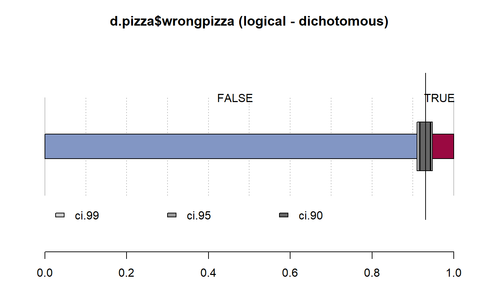Desc(d.pizza$driver) # factor#> ------------------------------------------------------------------------------ #> d.pizza$driver (factor) #> #> length n NAs unique levels dupes #> 1'209 1'204 5 7 7 y #> 99.6% 0.4% #> #> level freq perc cumfreq cumperc #> 1 Carpenter 272 22.6% 272 22.6% #> 2 Carter 234 19.4% 506 42.0% #> 3 Taylor 204 16.9% 710 59.0% #> 4 Hunter 156 13.0% 866 71.9% #> 5 Miller 125 10.4% 991 82.3% #> 6 Farmer 117 9.7% 1'108 92.0% #> 7 Butcher 96 8.0% 1'204 100.0% #>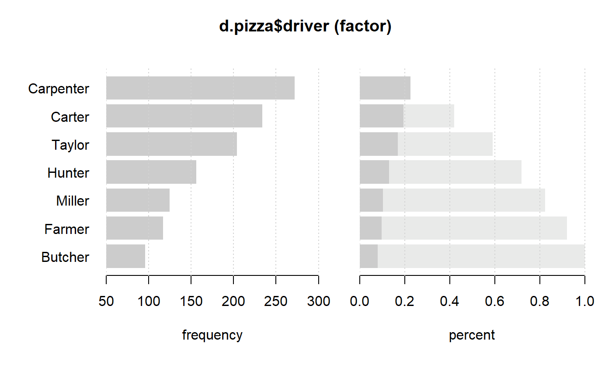Desc(d.pizza$quality) # ordered factor#> ------------------------------------------------------------------------------ #> d.pizza$quality (ordered, factor) #> #> length n NAs unique levels dupes #> 1'209 1'008 201 3 3 y #> 83.4% 16.6% #> #> level freq perc cumfreq cumperc #> 1 low 156 15.5% 156 15.5% #> 2 medium 356 35.3% 512 50.8% #> 3 high 496 49.2% 1'008 100.0% #>#> ------------------------------------------------------------------------------ #> as.character(d.pizza$driver) (character) #> #> length n NAs unique levels dupes #> 1'209 1'204 5 7 7 y #> 99.6% 0.4% #> #> level freq perc cumfreq cumperc #> 1 Carpenter 272 22.6% 272 22.6% #> 2 Carter 234 19.4% 506 42.0% #> 3 Taylor 204 16.9% 710 59.0% #> 4 Hunter 156 13.0% 866 71.9% #> 5 Miller 125 10.4% 991 82.3% #> 6 Farmer 117 9.7% 1'108 92.0% #> 7 Butcher 96 8.0% 1'204 100.0% #>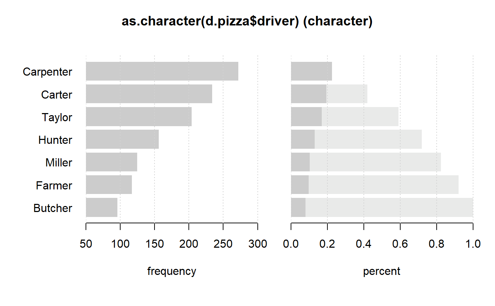Desc(d.pizza$week) # integer#> ------------------------------------------------------------------------------ #> d.pizza$week (numeric) #> #> length n NAs unique 0s mean meanCI' #> 1'209 1'177 32 6 0 11.40 11.33 #> 97.4% 2.6% 0.0% 11.48 #> #> .05 .10 .25 median .75 .90 .95 #> 9.00 10.00 10.00 11.00 13.00 13.00 13.00 #> #> range sd vcoef mad IQR skew kurt #> 5.00 1.33 0.12 1.48 3.00 -0.07 -1.01 #> #> #> level freq perc cumfreq cumperc #> 1 9 88 7.5% 88 7.5% #> 2 10 258 21.9% 346 29.4% #> 3 11 264 22.4% 610 51.8% #> 4 12 260 22.1% 870 73.9% #> 5 13 273 23.2% 1'143 97.1% #> 6 14 34 2.9% 1'177 100.0% #> #> heap(?): remarkable frequency (23.2%) for the mode(s) (= 13) #> #> ' 95%-CI (classic) #>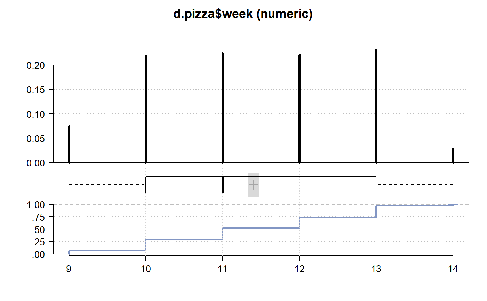Desc(d.pizza$delivery_min) # numeric#> ------------------------------------------------------------------------------ #> d.pizza$delivery_min (numeric) #> #> length n NAs unique 0s mean meanCI' #> 1'209 1'209 0 384 0 25.65 25.04 #> 100.0% 0.0% 0.0% 26.26 #> #> .05 .10 .25 median .75 .90 .95 #> 10.40 11.60 17.40 24.40 32.50 40.42 45.20 #> #> range sd vcoef mad IQR skew kurt #> 56.80 10.84 0.42 11.27 15.10 0.61 0.10 #> #> lowest : 8.8 (3), 8.9, 9.0 (3), 9.1 (5), 9.2 (3) #> highest: 61.9, 62.7, 62.9, 63.2, 65.6 #> #> ' 95%-CI (classic) #>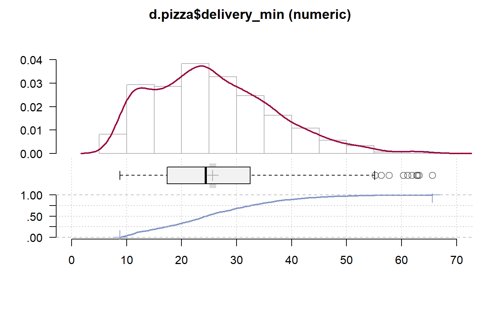Desc(d.pizza$date) # Date#> ------------------------------------------------------------------------------ #> d.pizza$date (Date) #> #> length n NAs unique #> 1'209 1'177 32 31 #> 97.4% 2.6% #> #> lowest : 2014-03-01 (42), 2014-03-02 (46), 2014-03-03 (26), 2014-03-04 (19) #> highest: 2014-03-28 (46), 2014-03-29 (53), 2014-03-30 (43), 2014-03-31 (34) #> #> #> Weekday: #> #> Pearson's Chi-squared test (1-dim uniform): #> X-squared = 78.879, df = 6, p-value = 6.09e-15 #> #> level freq perc cumfreq cumperc #> 1 Monday 144 12.2% 144 12.2% #> 2 Tuesday 117 9.9% 261 22.2% #> 3 Wednesday 134 11.4% 395 33.6% #> 4 Thursday 147 12.5% 542 46.0% #> 5 Friday 171 14.5% 713 60.6% #> 6 Saturday 244 20.7% 957 81.3% #> 7 Sunday 220 18.7% 1'177 100.0% #> #> Months: #> #> Pearson's Chi-squared test (1-dim uniform): #> X-squared = 12947, df = 11, p-value < 2.2e-16 #> #> level freq perc cumfreq cumperc #> 1 January 0 0.0% 0 0.0% #> 2 February 0 0.0% 0 0.0% #> 3 March 1'177 100.0% 1'177 100.0% #> 4 April 0 0.0% 1'177 100.0% #> 5 May 0 0.0% 1'177 100.0% #> 6 June 0 0.0% 1'177 100.0% #> 7 July 0 0.0% 1'177 100.0% #> 8 August 0 0.0% 1'177 100.0% #> 9 September 0 0.0% 1'177 100.0% #> 10 October 0 0.0% 1'177 100.0% #> 11 November 0 0.0% 1'177 100.0% #> 12 December 0 0.0% 1'177 100.0% #> #> By days : #> #> level freq perc cumfreq cumperc #> 1 2014-03-01 42 3.6% 42 3.6% #> 2 2014-03-02 46 3.9% 88 7.5% #> 3 2014-03-03 26 2.2% 114 9.7% #> 4 2014-03-04 19 1.6% 133 11.3% #> 5 2014-03-05 33 2.8% 166 14.1% #> 6 2014-03-06 39 3.3% 205 17.4% #> 7 2014-03-07 44 3.7% 249 21.2% #> 8 2014-03-08 55 4.7% 304 25.8% #> 9 2014-03-09 42 3.6% 346 29.4% #> 10 2014-03-10 26 2.2% 372 31.6% #> 11 2014-03-11 34 2.9% 406 34.5% #> 12 2014-03-12 36 3.1% 442 37.6% #> 13 2014-03-13 35 3.0% 477 40.5% #> 14 2014-03-14 38 3.2% 515 43.8% #> 15 2014-03-15 48 4.1% 563 47.8% #> 16 2014-03-16 47 4.0% 610 51.8% #> 17 2014-03-17 30 2.5% 640 54.4% #> 18 2014-03-18 32 2.7% 672 57.1% #> 19 2014-03-19 31 2.6% 703 59.7% #> 20 2014-03-20 36 3.1% 739 62.8% #> 21 2014-03-21 43 3.7% 782 66.4% #> 22 2014-03-22 46 3.9% 828 70.3% #> 23 2014-03-23 42 3.6% 870 73.9% #> 24 2014-03-24 28 2.4% 898 76.3% #> 25 2014-03-25 32 2.7% 930 79.0% #> 26 2014-03-26 34 2.9% 964 81.9% #> 27 2014-03-27 37 3.1% 1'001 85.0% #> 28 2014-03-28 46 3.9% 1'047 89.0% #> 29 2014-03-29 53 4.5% 1'100 93.5% #> 30 2014-03-30 43 3.7% 1'143 97.1% #> 31 2014-03-31 34 2.9% 1'177 100.0% #>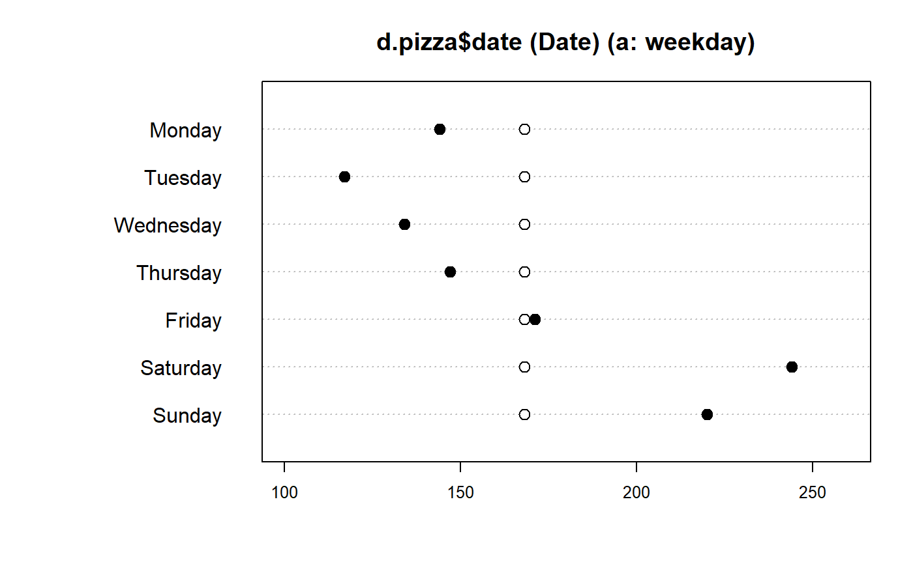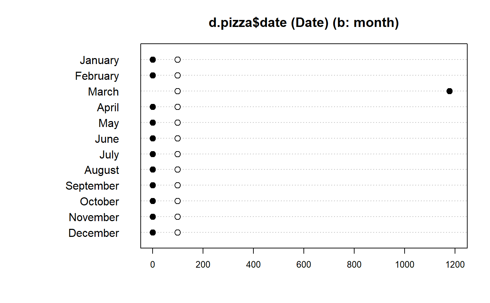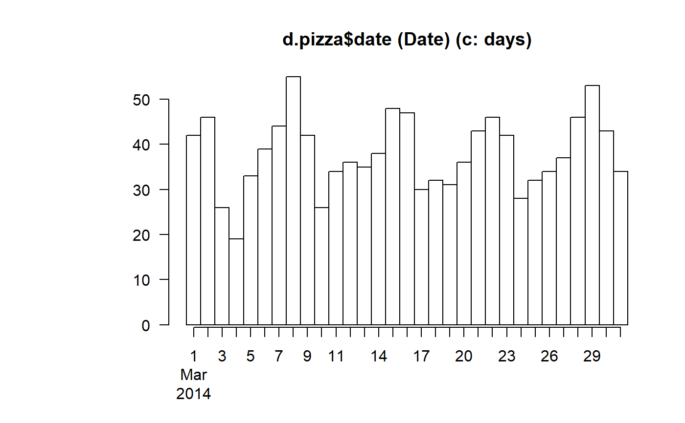Desc(d.pizza)#> ------------------------------------------------------------------------------ #> Describe d.pizza (data.frame): #> #> data frame: 1209 obs. of 16 variables #> 917 complete cases (75.8%) #> #> Nr ColName Class NAs Levels #> 1 index integer . #> 2 date Date 32 (2.6%) #> 3 week numeric 32 (2.6%) #> 4 weekday numeric 32 (2.6%) #> 5 area factor 10 (0.8%) (3): 1-Brent, #> 2-Camden, #> 3-Westminster #> 6 count integer 12 (1.0%) #> 7 rabate logical 12 (1.0%) #> 8 price numeric 12 (1.0%) #> 9 operator factor 8 (0.7%) (3): 1-Allanah, #> 2-Maria, 3-Rhonda #> 10 driver factor 5 (0.4%) (7): 1-Butcher, #> 2-Carpenter, #> 3-Carter, 4-Farmer, #> 5-Hunter, ... #> 11 delivery_min numeric . #> 12 temperature numeric 39 (3.2%) #> 13 wine_ordered integer 12 (1.0%) #> 14 wine_delivered integer 12 (1.0%) #> 15 wrongpizza logical 4 (0.3%) #> 16 quality ordered, factor 201 (16.6%) (3): 1-low, 2-medium, #> 3-high #> #> #> ------------------------------------------------------------------------------ #> 1 - index (integer) #> #> length n NAs unique 0s mean meanCI' #> 1'209 1'209 0 = n 0 605.00 585.30 #> 100.0% 0.0% 0.0% 624.70 #> #> .05 .10 .25 median .75 .90 .95 #> 61.40 121.80 303.00 605.00 907.00 1'088.20 1'148.60 #> #> range sd vcoef mad IQR skew kurt #> 1'208.00 349.15 0.58 447.75 604.00 0.00 -1.20 #> #> lowest : 1, 2, 3, 4, 5 #> highest: 1'205, 1'206, 1'207, 1'208, 1'209 #> #> ' 95%-CI (classic) #>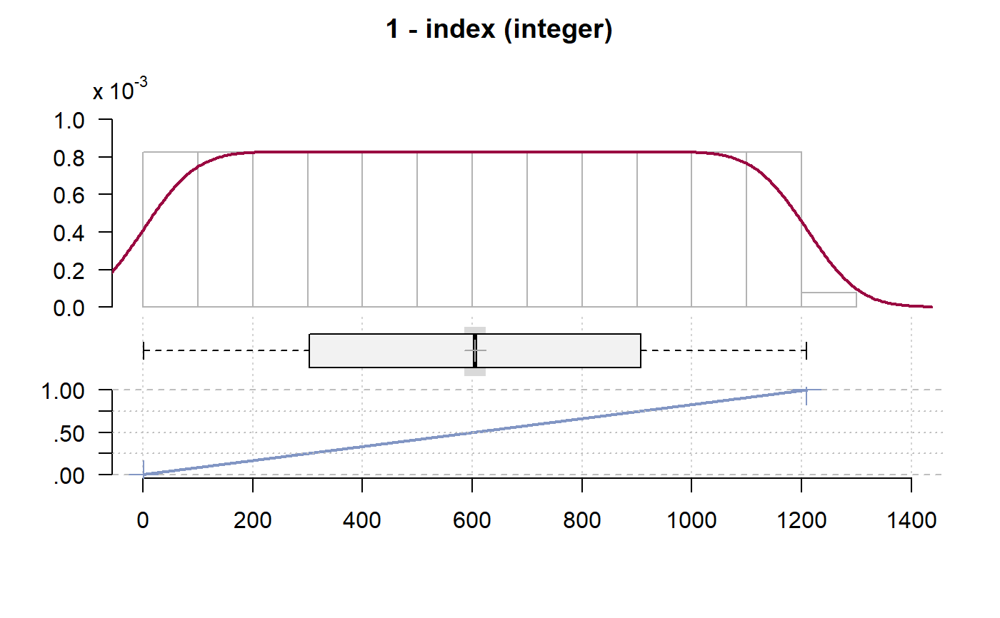#> ------------------------------------------------------------------------------ #> 2 - date (Date) #> #> length n NAs unique #> 1'209 1'177 32 31 #> 97.4% 2.6% #> #> lowest : 2014-03-01 (42), 2014-03-02 (46), 2014-03-03 (26), 2014-03-04 (19) #> highest: 2014-03-28 (46), 2014-03-29 (53), 2014-03-30 (43), 2014-03-31 (34) #> #> #> Weekday: #> #> Pearson's Chi-squared test (1-dim uniform): #> X-squared = 78.879, df = 6, p-value = 6.09e-15 #> #> level freq perc cumfreq cumperc #> 1 Monday 144 12.2% 144 12.2% #> 2 Tuesday 117 9.9% 261 22.2% #> 3 Wednesday 134 11.4% 395 33.6% #> 4 Thursday 147 12.5% 542 46.0% #> 5 Friday 171 14.5% 713 60.6% #> 6 Saturday 244 20.7% 957 81.3% #> 7 Sunday 220 18.7% 1'177 100.0% #> #> Months: #> #> Pearson's Chi-squared test (1-dim uniform): #> X-squared = 12947, df = 11, p-value < 2.2e-16 #> #> level freq perc cumfreq cumperc #> 1 January 0 0.0% 0 0.0% #> 2 February 0 0.0% 0 0.0% #> 3 March 1'177 100.0% 1'177 100.0% #> 4 April 0 0.0% 1'177 100.0% #> 5 May 0 0.0% 1'177 100.0% #> 6 June 0 0.0% 1'177 100.0% #> 7 July 0 0.0% 1'177 100.0% #> 8 August 0 0.0% 1'177 100.0% #> 9 September 0 0.0% 1'177 100.0% #> 10 October 0 0.0% 1'177 100.0% #> 11 November 0 0.0% 1'177 100.0% #> 12 December 0 0.0% 1'177 100.0% #> #> By days : #> #> level freq perc cumfreq cumperc #> 1 2014-03-01 42 3.6% 42 3.6% #> 2 2014-03-02 46 3.9% 88 7.5% #> 3 2014-03-03 26 2.2% 114 9.7% #> 4 2014-03-04 19 1.6% 133 11.3% #> 5 2014-03-05 33 2.8% 166 14.1% #> 6 2014-03-06 39 3.3% 205 17.4% #> 7 2014-03-07 44 3.7% 249 21.2% #> 8 2014-03-08 55 4.7% 304 25.8% #> 9 2014-03-09 42 3.6% 346 29.4% #> 10 2014-03-10 26 2.2% 372 31.6% #> 11 2014-03-11 34 2.9% 406 34.5% #> 12 2014-03-12 36 3.1% 442 37.6% #> 13 2014-03-13 35 3.0% 477 40.5% #> 14 2014-03-14 38 3.2% 515 43.8% #> 15 2014-03-15 48 4.1% 563 47.8% #> 16 2014-03-16 47 4.0% 610 51.8% #> 17 2014-03-17 30 2.5% 640 54.4% #> 18 2014-03-18 32 2.7% 672 57.1% #> 19 2014-03-19 31 2.6% 703 59.7% #> 20 2014-03-20 36 3.1% 739 62.8% #> 21 2014-03-21 43 3.7% 782 66.4% #> 22 2014-03-22 46 3.9% 828 70.3% #> 23 2014-03-23 42 3.6% 870 73.9% #> 24 2014-03-24 28 2.4% 898 76.3% #> 25 2014-03-25 32 2.7% 930 79.0% #> 26 2014-03-26 34 2.9% 964 81.9% #> 27 2014-03-27 37 3.1% 1'001 85.0% #> 28 2014-03-28 46 3.9% 1'047 89.0% #> 29 2014-03-29 53 4.5% 1'100 93.5% #> 30 2014-03-30 43 3.7% 1'143 97.1% #> 31 2014-03-31 34 2.9% 1'177 100.0% #>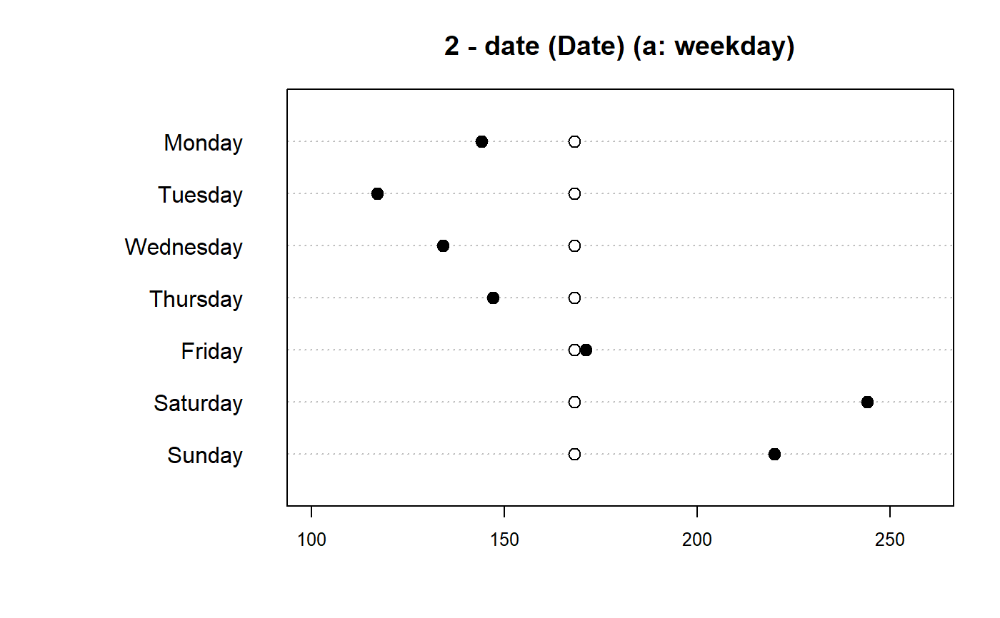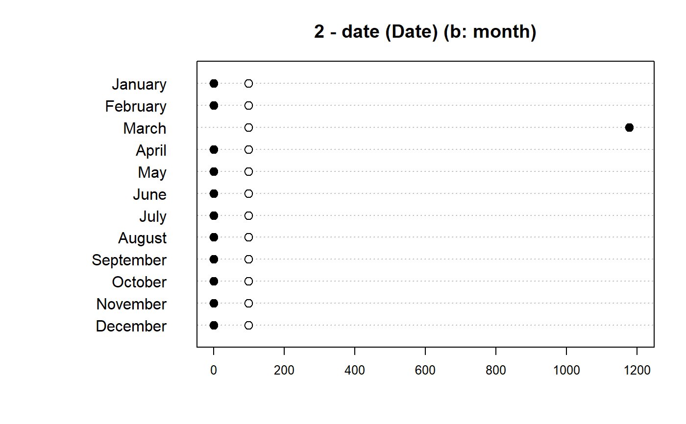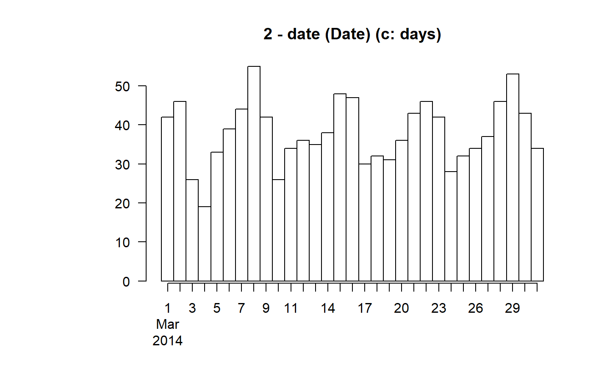#> ------------------------------------------------------------------------------ #> 3 - week (numeric) #> #> length n NAs unique 0s mean meanCI' #> 1'209 1'177 32 6 0 11.40 11.33 #> 97.4% 2.6% 0.0% 11.48 #> #> .05 .10 .25 median .75 .90 .95 #> 9.00 10.00 10.00 11.00 13.00 13.00 13.00 #> #> range sd vcoef mad IQR skew kurt #> 5.00 1.33 0.12 1.48 3.00 -0.07 -1.01 #> #> #> level freq perc cumfreq cumperc #> 1 9 88 7.5% 88 7.5% #> 2 10 258 21.9% 346 29.4% #> 3 11 264 22.4% 610 51.8% #> 4 12 260 22.1% 870 73.9% #> 5 13 273 23.2% 1'143 97.1% #> 6 14 34 2.9% 1'177 100.0% #> #> heap(?): remarkable frequency (23.2%) for the mode(s) (= 13) #> #> ' 95%-CI (classic) #>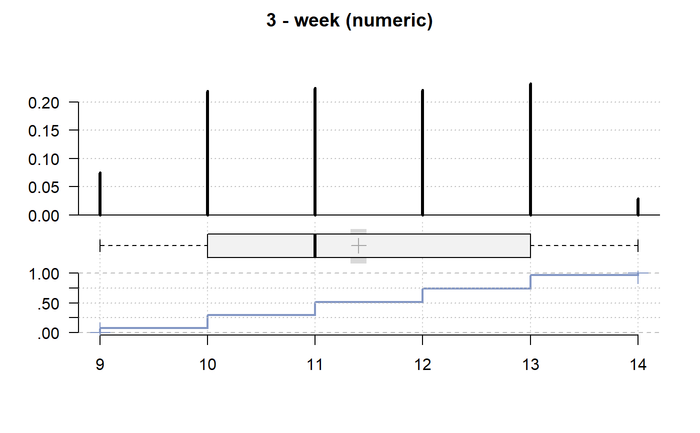#> ------------------------------------------------------------------------------ #> 4 - weekday (numeric) #> #> length n NAs unique 0s mean meanCI' #> 1'209 1'177 32 7 0 4.44 4.33 #> 97.4% 2.6% 0.0% 4.56 #> #> .05 .10 .25 median .75 .90 .95 #> 1.00 1.00 3.00 5.00 6.00 7.00 7.00 #> #> range sd vcoef mad IQR skew kurt #> 6.00 2.02 0.45 2.97 3.00 -0.34 -1.17 #> #> #> level freq perc cumfreq cumperc #> 1 1 144 12.2% 144 12.2% #> 2 2 117 9.9% 261 22.2% #> 3 3 134 11.4% 395 33.6% #> 4 4 147 12.5% 542 46.0% #> 5 5 171 14.5% 713 60.6% #> 6 6 244 20.7% 957 81.3% #> 7 7 220 18.7% 1'177 100.0% #> #> heap(?): remarkable frequency (20.7%) for the mode(s) (= 6) #> #> ' 95%-CI (classic) #>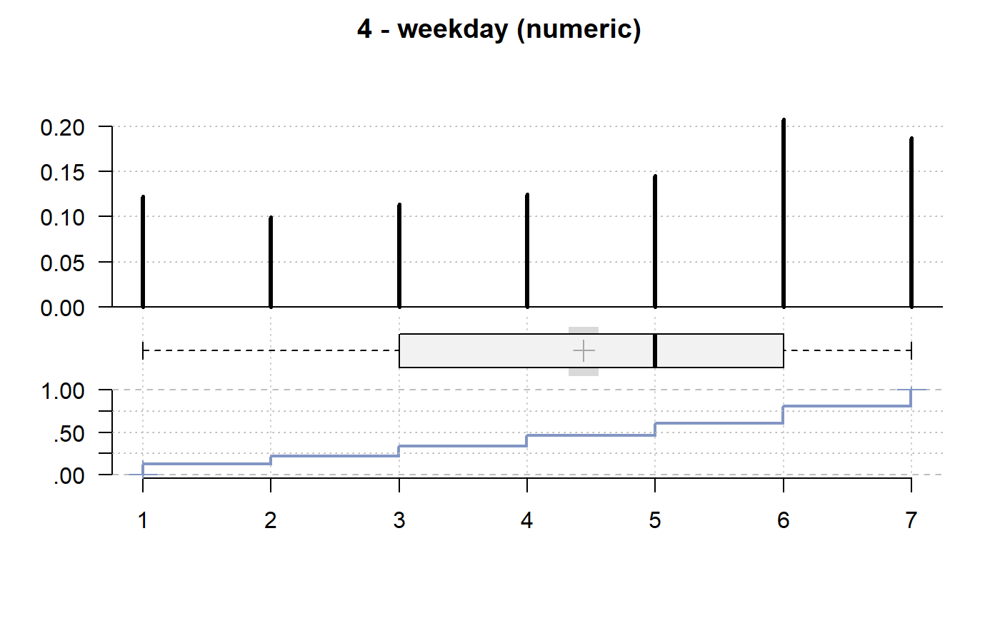#> ------------------------------------------------------------------------------ #> 5 - area (factor) #> #> length n NAs unique levels dupes #> 1'209 1'199 10 3 3 y #> 99.2% 0.8% #> #> level freq perc cumfreq cumperc #> 1 Brent 474 39.5% 474 39.5% #> 2 Westminster 381 31.8% 855 71.3% #> 3 Camden 344 28.7% 1'199 100.0% #>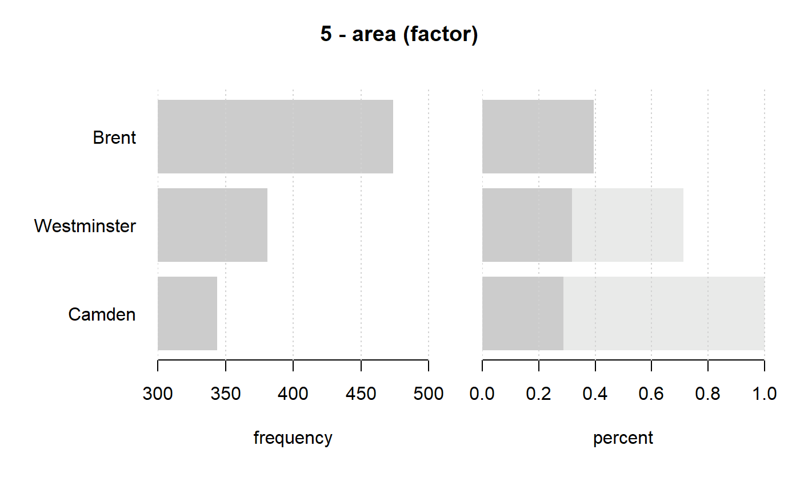#> ------------------------------------------------------------------------------ #> 6 - count (integer) #> #> length n NAs unique 0s mean meanCI' #> 1'209 1'197 12 8 0 3.44 3.36 #> 99.0% 1.0% 0.0% 3.53 #> #> .05 .10 .25 median .75 .90 .95 #> 1.00 2.00 2.00 3.00 4.00 6.00 6.00 #> #> range sd vcoef mad IQR skew kurt #> 7.00 1.56 0.45 1.48 2.00 0.45 -0.36 #> #> #> level freq perc cumfreq cumperc #> 1 1 108 9.0% 108 9.0% #> 2 2 259 21.6% 367 30.7% #> 3 3 300 25.1% 667 55.7% #> 4 4 240 20.1% 907 75.8% #> 5 5 152 12.7% 1'059 88.5% #> 6 6 97 8.1% 1'156 96.6% #> 7 7 34 2.8% 1'190 99.4% #> 8 8 7 0.6% 1'197 100.0% #> #> heap(?): remarkable frequency (25.1%) for the mode(s) (= 3) #> #> ' 95%-CI (classic) #>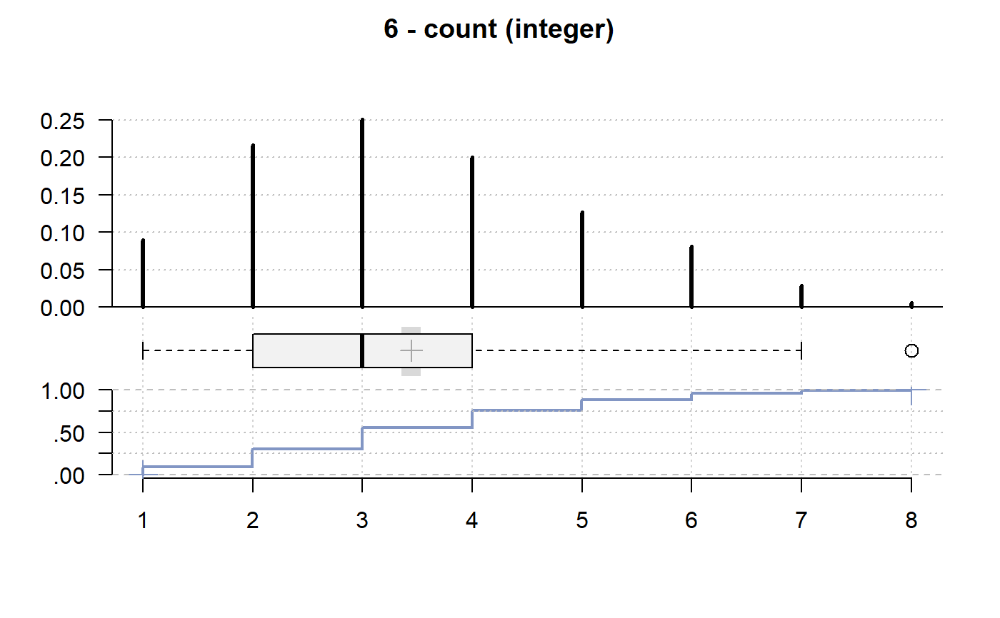#> ------------------------------------------------------------------------------ #> 7 - rabate (logical - dichotomous) #> #> length n NAs unique #> 1'209 1'197 12 2 #> 99.0% 1.0% #> #> freq perc lci.95 uci.95' #> FALSE 601 50.2% 47.4% 53.0% #> TRUE 596 49.8% 47.0% 52.6% #> #> ' 95%-CI (Wilson) #>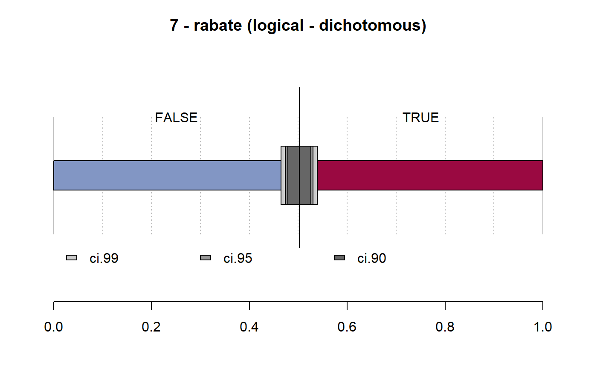#> ------------------------------------------------------------------------------ #> 8 - price (numeric) #> #> length n NAs unique 0s mean meanCI' #> 1'209 1'197 12 360 0 48.7289 47.5022 #> 99.0% 1.0% 0.0% 49.9556 #> #> .05 .10 .25 median .75 .90 .95 #> 13.9900 23.9800 30.9800 46.7640 63.1800 78.8328 87.1200 #> #> range sd vcoef mad IQR skew kurt #> 125.5420 21.6313 0.4439 23.4014 32.2000 0.4971 0.1076 #> #> lowest : 8.792 (3), 9.592, 10.392 (2), 10.99 (11), 11.192 (2) #> highest: 116.532, 123.39, 124.434, 129.546, 134.334 #> #> ' 95%-CI (classic) #>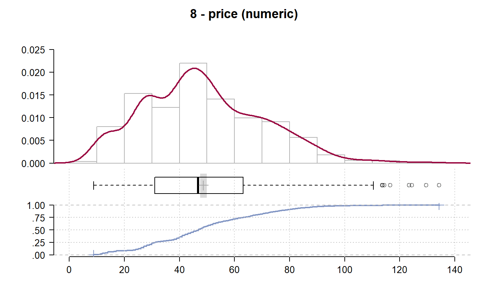#> ------------------------------------------------------------------------------ #> 9 - operator (factor) #> #> length n NAs unique levels dupes #> 1'209 1'201 8 3 3 y #> 99.3% 0.7% #> #> level freq perc cumfreq cumperc #> 1 Rhonda 446 37.1% 446 37.1% #> 2 Maria 388 32.3% 834 69.4% #> 3 Allanah 367 30.6% 1'201 100.0% #>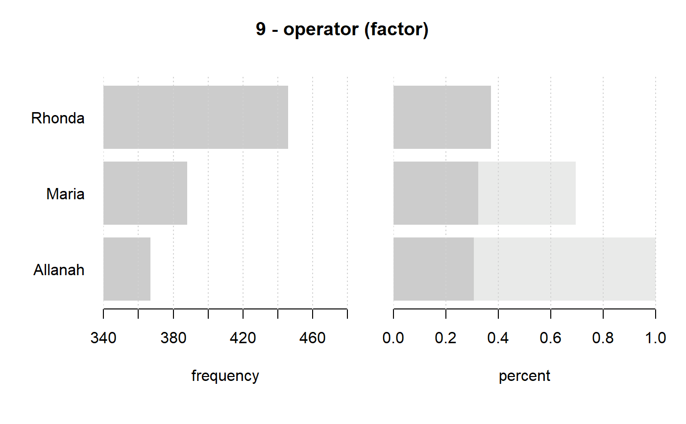#> ------------------------------------------------------------------------------ #> 10 - driver (factor) #> #> length n NAs unique levels dupes #> 1'209 1'204 5 7 7 y #> 99.6% 0.4% #> #> level freq perc cumfreq cumperc #> 1 Carpenter 272 22.6% 272 22.6% #> 2 Carter 234 19.4% 506 42.0% #> 3 Taylor 204 16.9% 710 59.0% #> 4 Hunter 156 13.0% 866 71.9% #> 5 Miller 125 10.4% 991 82.3% #> 6 Farmer 117 9.7% 1'108 92.0% #> 7 Butcher 96 8.0% 1'204 100.0% #>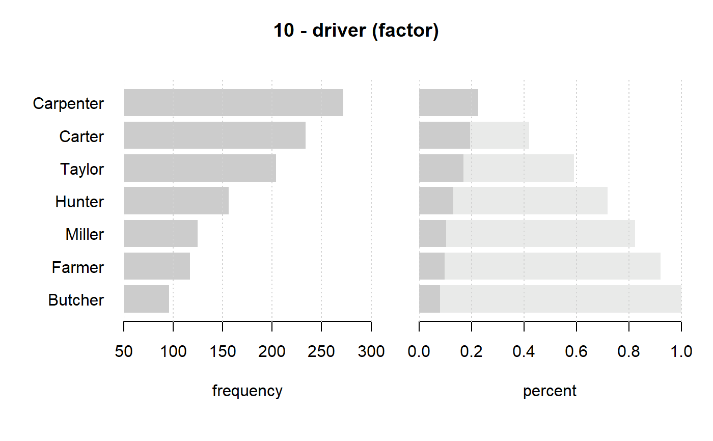#> ------------------------------------------------------------------------------ #> 11 - delivery_min (numeric) #> #> length n NAs unique 0s mean meanCI' #> 1'209 1'209 0 384 0 25.65 25.04 #> 100.0% 0.0% 0.0% 26.26 #> #> .05 .10 .25 median .75 .90 .95 #> 10.40 11.60 17.40 24.40 32.50 40.42 45.20 #> #> range sd vcoef mad IQR skew kurt #> 56.80 10.84 0.42 11.27 15.10 0.61 0.10 #> #> lowest : 8.8 (3), 8.9, 9.0 (3), 9.1 (5), 9.2 (3) #> highest: 61.9, 62.7, 62.9, 63.2, 65.6 #> #> ' 95%-CI (classic) #>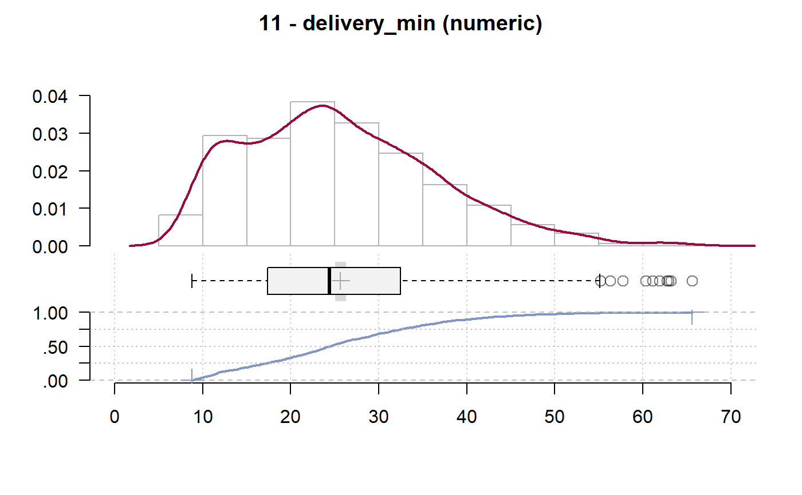#> ------------------------------------------------------------------------------ #> 12 - temperature (numeric) #> #> length n NAs unique 0s mean meanCI' #> 1'209 1'170 39 375 0 47.937 47.367 #> 96.8% 3.2% 0.0% 48.507 #> #> .05 .10 .25 median .75 .90 .95 #> 26.700 33.290 42.225 50.000 55.300 58.800 60.500 #> #> range sd vcoef mad IQR skew kurt #> 45.500 9.938 0.207 9.192 13.075 -0.842 0.051 #> #> lowest : 19.3, 19.4, 20.0, 20.2 (2), 20.35 #> highest: 63.8, 64.1, 64.6, 64.7, 64.8 #> #> ' 95%-CI (classic) #>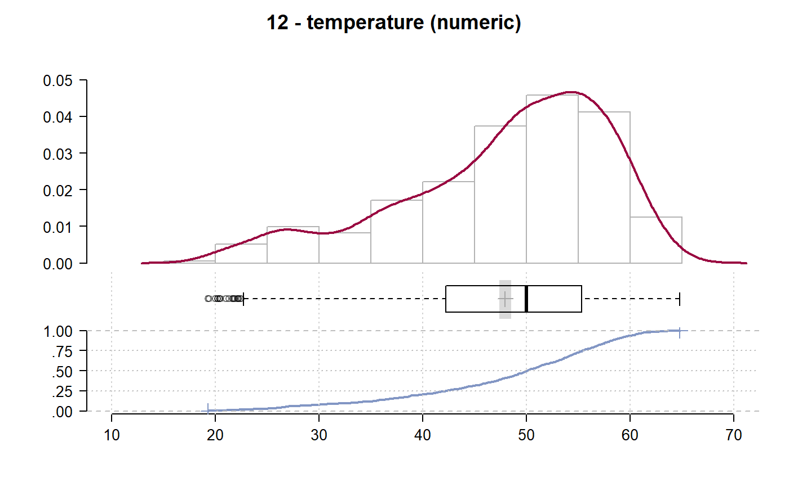#> ------------------------------------------------------------------------------ #> 13 - wine_ordered (integer - dichotomous) #> #> length n NAs unique #> 1'209 1'197 12 2 #> 99.0% 1.0% #> #> freq perc lci.95 uci.95' #> 0 1'010 84.4% 82.2% 86.3% #> 1 187 15.6% 13.7% 17.8% #> #> ' 95%-CI (Wilson) #>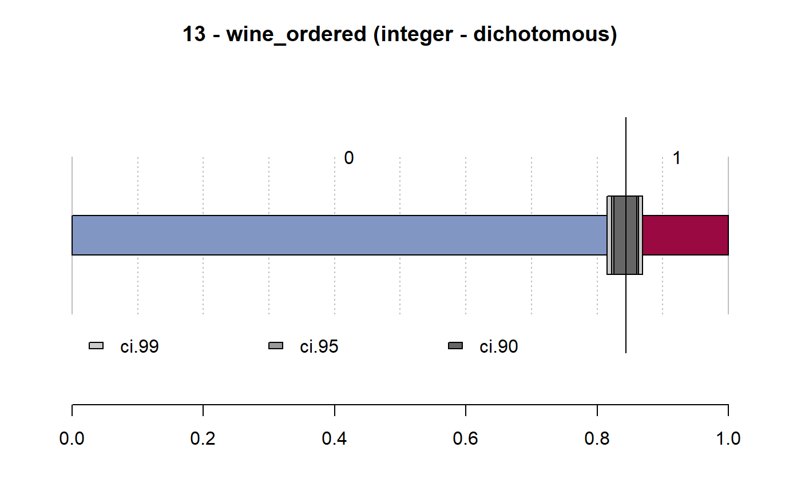#> ------------------------------------------------------------------------------ #> 14 - wine_delivered (integer - dichotomous) #> #> length n NAs unique #> 1'209 1'197 12 2 #> 99.0% 1.0% #> #> freq perc lci.95 uci.95' #> 0 1'034 86.4% 84.3% 88.2% #> 1 163 13.6% 11.8% 15.7% #> #> ' 95%-CI (Wilson) #>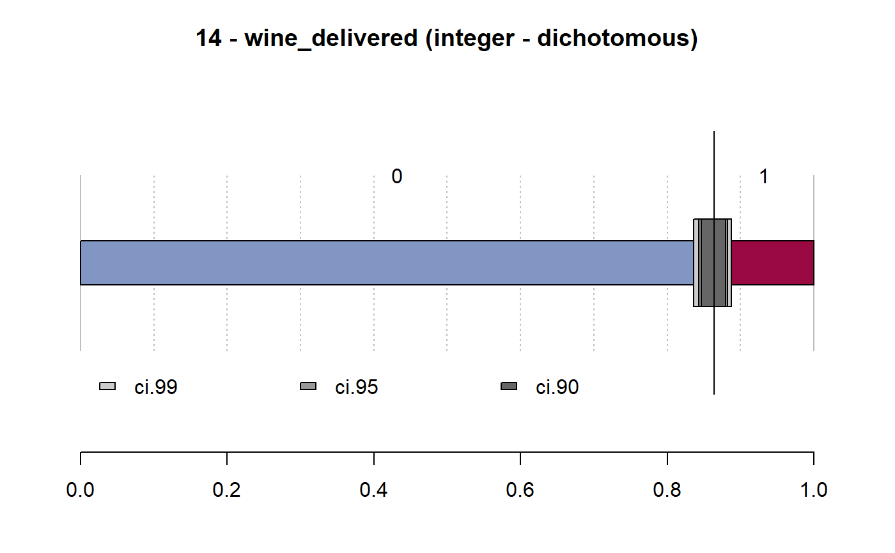#> ------------------------------------------------------------------------------ #> 15 - wrongpizza (logical - dichotomous) #> #> length n NAs unique #> 1'209 1'205 4 2 #> 99.7% 0.3% #> #> freq perc lci.95 uci.95' #> FALSE 1'122 93.1% 91.5% 94.4% #> TRUE 83 6.9% 5.6% 8.5% #> #> ' 95%-CI (Wilson) #>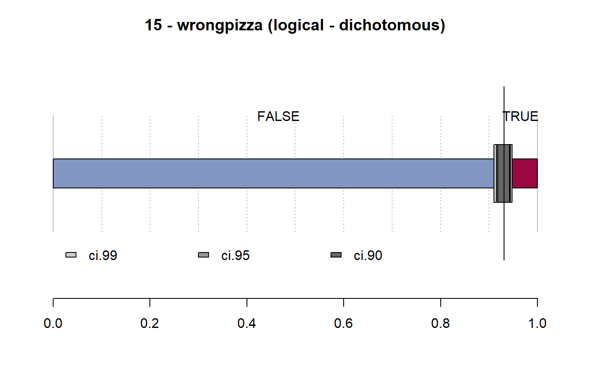#> ------------------------------------------------------------------------------ #> 16 - quality (ordered, factor) #> #> length n NAs unique levels dupes #> 1'209 1'008 201 3 3 y #> 83.4% 16.6% #> #> level freq perc cumfreq cumperc #> 1 low 156 15.5% 156 15.5% #> 2 medium 356 35.3% 512 50.8% #> 3 high 496 49.2% 1'008 100.0% #>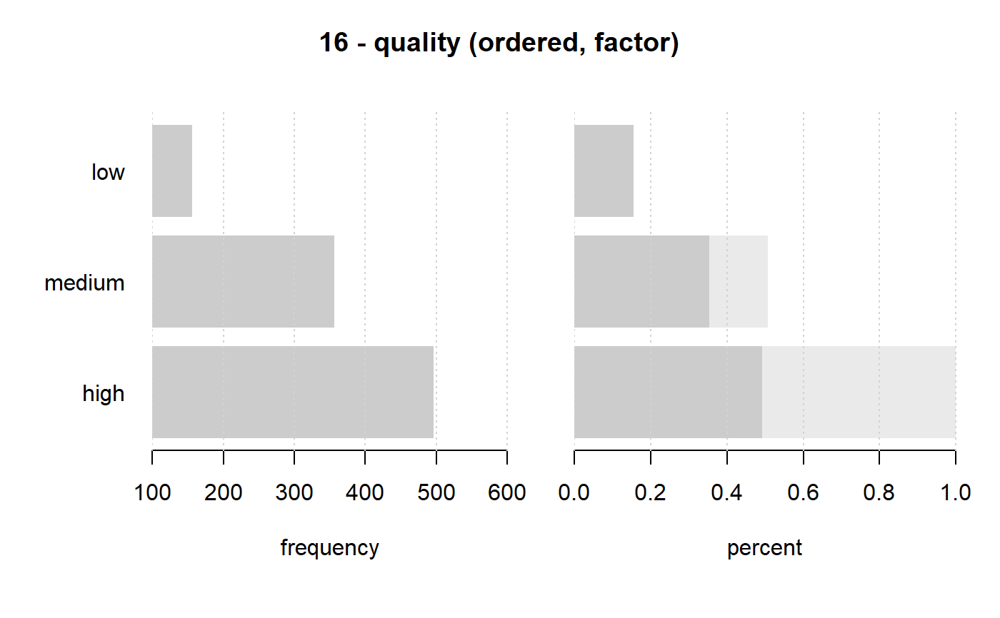Desc(d.pizza$wrongpizza, main="The wrong pizza delivered", digits=5)#> ------------------------------------------------------------------------------ #> The wrong pizza delivered #> #> length n NAs unique #> 1'209 1'205 4 2 #> 99.7% 0.3% #> #> freq perc lci.95 uci.95' #> FALSE 1'122 93.11203% 91.54086% 94.40921% #> TRUE 83 6.88797% 5.59079% 8.45914% #> #> ' 95%-CI (Wilson) #>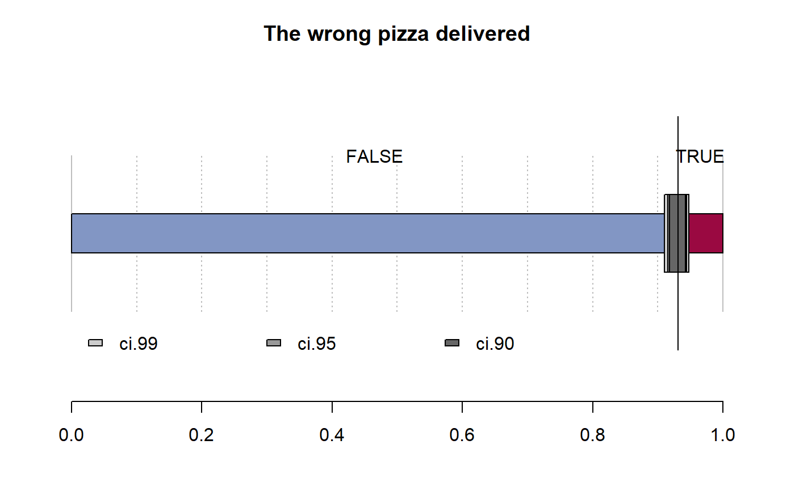#> ------------------------------------------------------------------------------ #> table(d.pizza$area) (table) #> #> Summary: #> n: 1'199, rows: 3 #> #> Pearson's Chi-squared test (1-dim uniform): #> X-squared = 22.45, df = 2, p-value = 0.00001333 #> #> level freq perc cumfreq cumperc #> 1 Brent 474 39.5% 474 39.5% #> 2 Camden 344 28.7% 818 68.2% #> 3 Westminster 381 31.8% 1'199 100.0% #>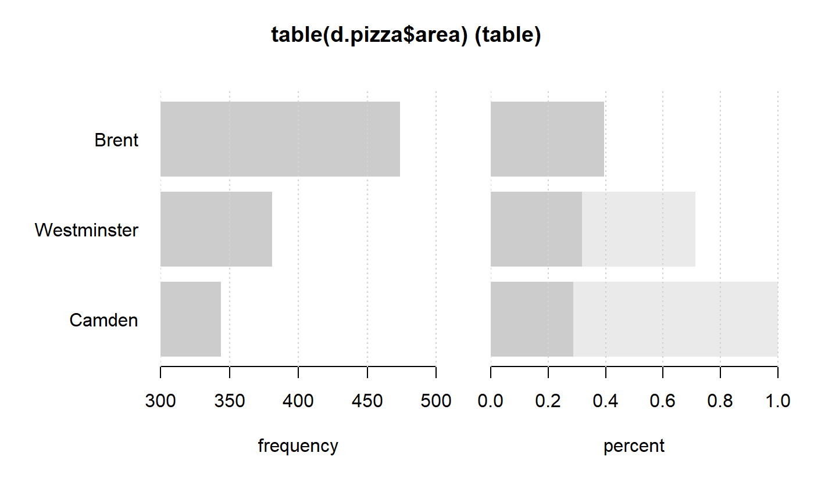#> ------------------------------------------------------------------------------ #> table(d.pizza$area, d.pizza$operator) (table) #> #> Summary: #> n: 1'191, rows: 3, columns: 3 #> #> Pearson's Chi-squared test: #> X-squared = 17.905, df = 4, p-value = 0.001288 #> Likelihood Ratio: #> X-squared = 18.099, df = 4, p-value = 0.001181 #> Mantel-Haenszel Chi-squared: #> X-squared = 8.6654, df = 1, p-value = 0.003243 #> #> Phi-Coefficient 0.123 #> Contingency Coeff. 0.122 #> Cramer's V 0.087 #> #> #> Allanah Maria Rhonda Sum #> #> Brent freq 153 153 167 473 #> perc 12.8% 12.8% 14.0% 39.7% #> p.row 32.3% 32.3% 35.3% . #> p.col 41.9% 39.9% 37.7% . #> #> Camden freq 123 108 109 340 #> perc 10.3% 9.1% 9.2% 28.5% #> p.row 36.2% 31.8% 32.1% . #> p.col 33.7% 28.2% 24.6% . #> #> Westminster freq 89 122 167 378 #> perc 7.5% 10.2% 14.0% 31.7% #> p.row 23.5% 32.3% 44.2% . #> p.col 24.4% 31.9% 37.7% . #> #> Sum freq 365 383 443 1'191 #> perc 30.6% 32.2% 37.2% 100.0% #> p.row . . . . #> p.col . . . . #> #>#> ------------------------------------------------------------------------------ #> table(d.pizza$area, d.pizza$operator, d.pizza$driver) (table) #> #> Summary: #> n: 1'186, 3-dim table: 3 x 3 x 7 #> #> Chi-squared test for independence of all factors: #> X-squared = 1252.621, df = 52, p-value = < 2.2e-16 #> #> Butcher Carpenter Carter Farmer Hunter Miller Taylor Sum #> #> Brent Allanah 24 6 36 5 56 2 23 152 #> Maria 5 10 89 5 35 1 8 153 #> Rhonda 43 13 52 8 37 3 11 167 #> Camden Allanah 0 4 16 21 0 11 69 121 #> Maria 0 5 22 31 1 18 31 108 #> Rhonda 1 10 9 35 3 10 40 108 #> Westminster Allanah 6 47 2 2 12 12 7 88 #> Maria 3 71 3 2 7 30 6 122 #> Rhonda 13 101 0 7 5 34 7 167 #> Sum Allanah 30 57 54 28 68 25 99 361 #> Maria 8 86 114 38 43 49 45 383 #> Rhonda 57 124 61 50 45 47 58 442 #>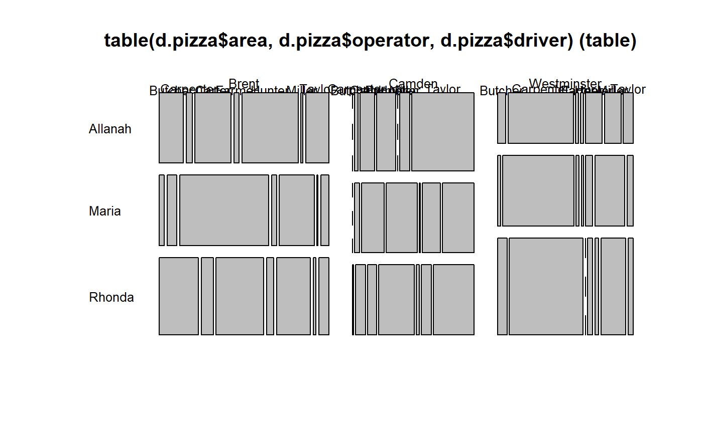#> ------------------------------------------------------------------------------ #> log(d.pizza$temperature) (numeric) #> #> length n NAs unique 0s mean meanCI' #> 1'209 1'170 39 375 0 3.843745 3.829891 #> 96.8% 3.2% 0.0% 3.857599 #> #> .05 .10 .25 median .75 .90 .95 #> 3.284664 3.505257 3.743012 3.912023 4.012773 4.074142 4.102643 #> #> range sd vcoef mad IQR skew kurt #> 1.211201 0.241536 0.062839 0.181200 0.269761 -1.377446 1.528453 #> #> lowest : 2.960105, 2.965273, 2.995732, 3.005683 (2), 3.013081 #> highest: 4.155753, 4.160444, 4.168214, 4.169761, 4.171306 #> #> ' 95%-CI (classic) #>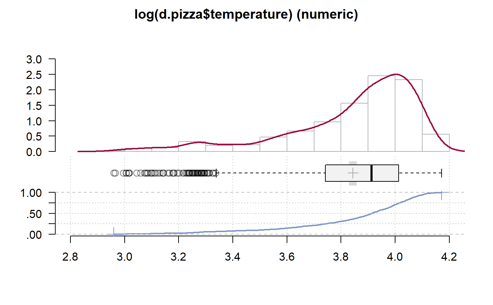Desc(d.pizza$temperature > 45)#> ------------------------------------------------------------------------------ #> d.pizza$temperature > 45 (logical - dichotomous) #> #> length n NAs unique #> 1'209 1'170 39 2 #> 96.8% 3.2% #> #> freq perc lci.95 uci.95' #> FALSE 369 31.5% 28.9% 34.3% #> TRUE 801 68.5% 65.7% 71.1% #> #> ' 95%-CI (Wilson) #>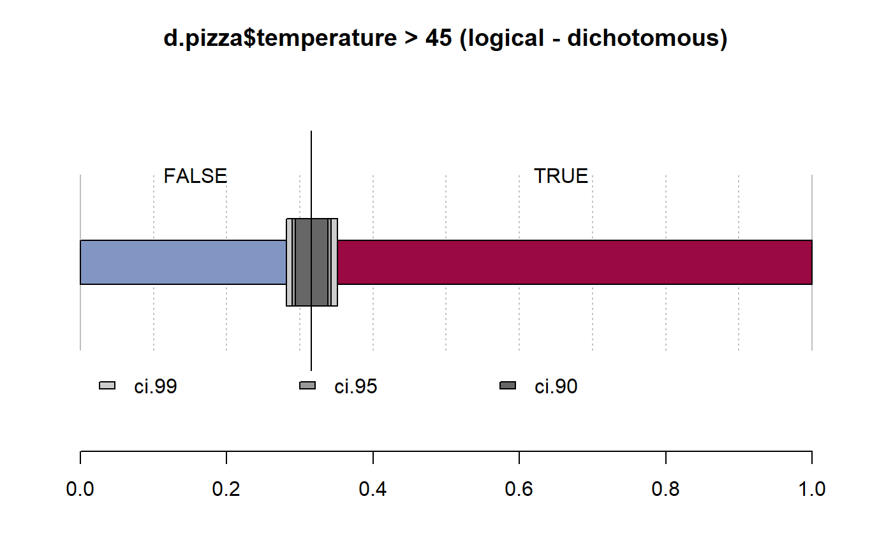# supported labels Label(d.pizza$temperature) <- "This is the temperature in degrees Celsius measured at the time when the pizza is delivered to the client." Desc(d.pizza$temperature)#> ------------------------------------------------------------------------------ #> d.pizza$temperature (numeric) : #> This is the temperature in degrees Celsius measured at the time when #> the pizza is delivered to the client. #> #> #> length n NAs unique 0s mean meanCI' #> 1'209 1'170 39 375 0 47.937 47.367 #> 96.8% 3.2% 0.0% 48.507 #> #> .05 .10 .25 median .75 .90 .95 #> 26.700 33.290 42.225 50.000 55.300 58.800 60.500 #> #> range sd vcoef mad IQR skew kurt #> 45.500 9.938 0.207 9.192 13.075 -0.842 0.051 #> #> lowest : 19.3, 19.4, 20.0, 20.2 (2), 20.35 #> highest: 63.8, 64.1, 64.6, 64.7, 64.8 #> #> ' 95%-CI (classic) #># try as well: Desc(d.pizza$temperature, wrd=GetNewWrd()) z <- Desc(d.pizza$temperature) print(z, digits=1, plotit=FALSE)#> ------------------------------------------------------------------------------ #> d.pizza$temperature (numeric) : #> This is the temperature in degrees Celsius measured at the time when #> the pizza is delivered to the client. #> #> #> length n NAs unique 0s mean meanCI' #> 1'209 1'170 39 375 0 47.9 47.4 #> 96.8% 3.2% 0.0% 48.5 #> #> .05 .10 .25 median .75 .90 .95 #> 26.7 33.3 42.2 50.0 55.3 58.8 60.5 #> #> range sd vcoef mad IQR skew kurt #> 45.5 9.9 0.2 9.2 13.1 -0.8 0.1 #> #> lowest : 19.3, 19.4, 20.0, 20.2 (2), 20.4 #> highest: 63.8, 64.1, 64.6, 64.7, 64.8 #> #> ' 95%-CI (classic) #># plot (additional arguments are passed on to the underlying plot function) plot(z, main="The pizza's temperature in Celsius", args.hist=list(breaks=50))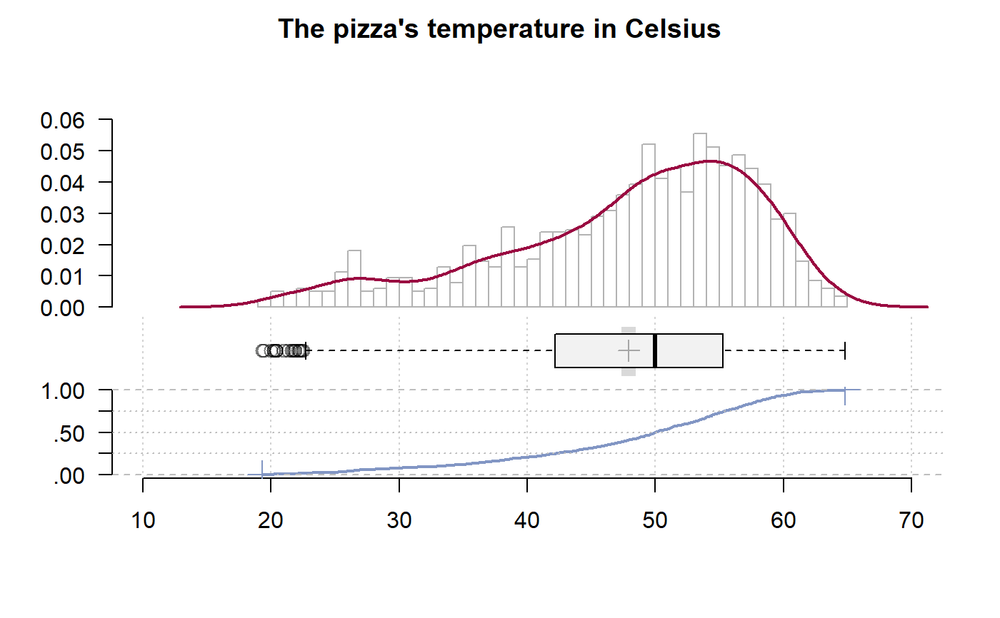# formula interface for single variables Desc(~ uptake + Type, data = CO2, plotit = FALSE)#> ------------------------------------------------------------------------------ #> CO2$uptake (numeric) #> #> length n NAs unique 0s mean meanCI' #> 84 84 0 76 0 27.213 24.866 #> 100.0% 0.0% 0.0% 29.560 #> #> .05 .10 .25 median .75 .90 .95 #> 10.705 12.360 17.900 28.300 37.125 41.160 42.355 #> #> range sd vcoef mad IQR skew kurt #> 37.800 10.814 0.397 14.826 19.225 -0.104 -1.348 #> #> lowest : 7.7, 9.3, 10.5, 10.6 (2), 11.3 #> highest: 42.4, 42.9, 43.9, 44.3, 45.5 #> #> ' 95%-CI (classic) #> #> ------------------------------------------------------------------------------ #> CO2$Type (logical) #> #> length n NAs unique #> 84 84 0 2 #> 100.0% 0.0% #> #> freq perc lci.95 uci.95' #> Quebec 42 50.0% 39.5% 60.5% #> Mississippi 42 50.0% 39.5% 60.5% #> #> ' 95%-CI (Wilson) #># bivariate Desc(price ~ operator, data=d.pizza) # numeric ~ factor#> ------------------------------------------------------------------------------ #> price ~ operator (d.pizza) #> #> Summary: #> n pairs: 1'209, valid: 1'189 (98.3%), missings: 20 (1.7%), groups: 3 #> #> #> Allanah Maria Rhonda #> mean 46.30693 49.11556 50.37397 #> median 44.97000 46.76400 47.97000 #> sd 20.15232 21.97820 22.41006 #> IQR 28.86780 31.82800 33.43175 #> n 363 384 442 #> np 30.52986% 32.29605% 37.17410% #> NAs 4 4 4 #> 0s 0 0 0 #> #> Kruskal-Wallis rank sum test: #> Kruskal-Wallis chi-squared = 6.2048, df = 2, p-value = 0.04494 #> Warning: #> Grouping variable contains 8 NAs (0.662%). #>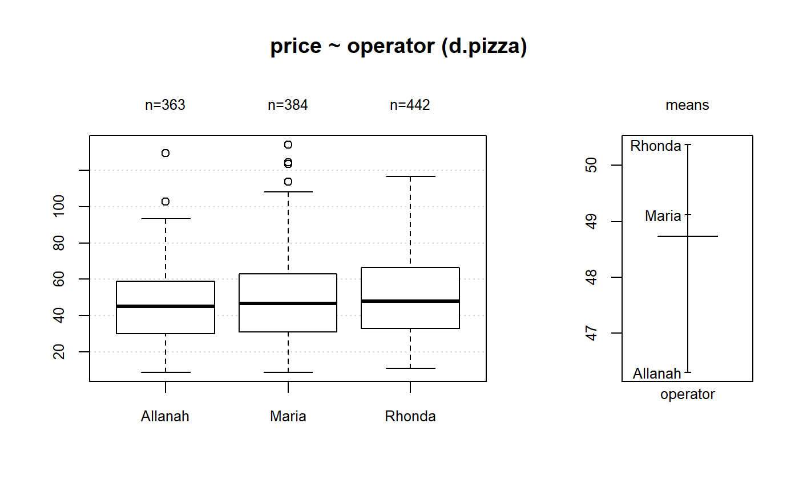Desc(driver ~ operator, data=d.pizza) # factor ~ factor#> ------------------------------------------------------------------------------ #> driver ~ operator (d.pizza) #> #> Summary: #> n: 1'196, rows: 7, columns: 3 #> #> Pearson's Chi-squared test: #> X-squared = 133.06, df = 12, p-value < 2.2e-16 #> Likelihood Ratio: #> X-squared = 133.53, df = 12, p-value < 2.2e-16 #> Mantel-Haenszel Chi-squared: #> X-squared = 33.539, df = 1, p-value = 0.000000006984 #> #> Phi-Coefficient 0.334 #> Contingency Coeff. 0.316 #> Cramer's V 0.236 #> #> #> operator Allanah Maria Rhonda Sum #> driver #> #> Butcher freq 30 8 58 96 #> perc 2.5% 0.7% 4.8% 8.0% #> p.row 31.2% 8.3% 60.4% . #> p.col 8.3% 2.1% 13.0% . #> #> Carpenter freq 58 87 125 270 #> perc 4.8% 7.3% 10.5% 22.6% #> p.row 21.5% 32.2% 46.3% . #> p.col 16.0% 22.4% 28.1% . #> #> Carter freq 55 117 62 234 #> perc 4.6% 9.8% 5.2% 19.6% #> p.row 23.5% 50.0% 26.5% . #> p.col 15.2% 30.2% 13.9% . #> #> Farmer freq 28 38 50 116 #> perc 2.3% 3.2% 4.2% 9.7% #> p.row 24.1% 32.8% 43.1% . #> p.col 7.7% 9.8% 11.2% . #> #> Hunter freq 68 43 45 156 #> perc 5.7% 3.6% 3.8% 13.0% #> p.row 43.6% 27.6% 28.8% . #> p.col 18.7% 11.1% 10.1% . #> #> Miller freq 25 50 47 122 #> perc 2.1% 4.2% 3.9% 10.2% #> p.row 20.5% 41.0% 38.5% . #> p.col 6.9% 12.9% 10.6% . #> #> Taylor freq 99 45 58 202 #> perc 8.3% 3.8% 4.8% 16.9% #> p.row 49.0% 22.3% 28.7% . #> p.col 27.3% 11.6% 13.0% . #> #> Sum freq 363 388 445 1'196 #> perc 30.4% 32.4% 37.2% 100.0% #> p.row . . . . #> p.col . . . . #> #>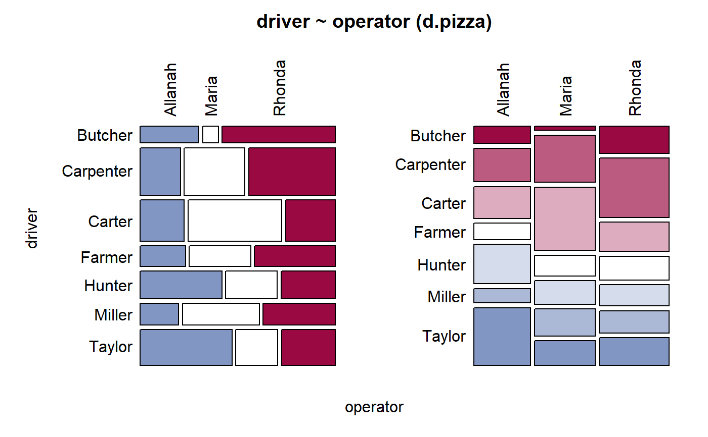Desc(driver ~ area + operator, data=d.pizza) # factor ~ several factors#> ------------------------------------------------------------------------------ #> driver ~ area (d.pizza) #> #> Summary: #> n: 1'194, rows: 7, columns: 3 #> #> Pearson's Chi-squared test: #> X-squared = 1009.5, df = 12, p-value < 2.2e-16 #> Likelihood Ratio: #> X-squared = 1020.9, df = 12, p-value < 2.2e-16 #> Mantel-Haenszel Chi-squared: #> X-squared = 2.6144, df = 1, p-value = 0.1059 #> #> Phi-Coefficient 0.919 #> Contingency Coeff. 0.677 #> Cramer's V 0.650 #> #> #> area Brent Camden Westminster Sum #> driver #> #> Butcher freq 72 1 22 95 #> perc 6.0% 0.1% 1.8% 8.0% #> p.row 75.8% 1.1% 23.2% . #> p.col 15.2% 0.3% 5.8% . #> #> Carpenter freq 29 19 221 269 #> perc 2.4% 1.6% 18.5% 22.5% #> p.row 10.8% 7.1% 82.2% . #> p.col 6.1% 5.6% 58.2% . #> #> Carter freq 177 47 5 229 #> perc 14.8% 3.9% 0.4% 19.2% #> p.row 77.3% 20.5% 2.2% . #> p.col 37.4% 13.8% 1.3% . #> #> Farmer freq 19 87 11 117 #> perc 1.6% 7.3% 0.9% 9.8% #> p.row 16.2% 74.4% 9.4% . #> p.col 4.0% 25.5% 2.9% . #> #> Hunter freq 128 4 24 156 #> perc 10.7% 0.3% 2.0% 13.1% #> p.row 82.1% 2.6% 15.4% . #> p.col 27.1% 1.2% 6.3% . #> #> Miller freq 6 41 77 124 #> perc 0.5% 3.4% 6.4% 10.4% #> p.row 4.8% 33.1% 62.1% . #> p.col 1.3% 12.0% 20.3% . #> #> Taylor freq 42 142 20 204 #> perc 3.5% 11.9% 1.7% 17.1% #> p.row 20.6% 69.6% 9.8% . #> p.col 8.9% 41.6% 5.3% . #> #> Sum freq 473 341 380 1'194 #> perc 39.6% 28.6% 31.8% 100.0% #> p.row . . . . #> p.col . . . . #> #>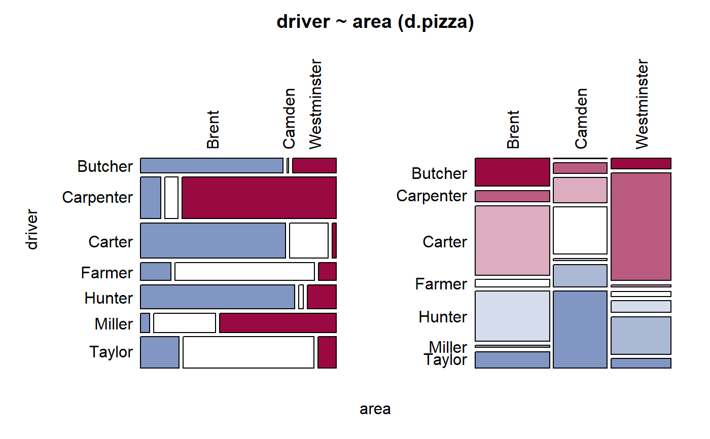#> ------------------------------------------------------------------------------ #> driver ~ operator (d.pizza) #> #> Summary: #> n: 1'196, rows: 7, columns: 3 #> #> Pearson's Chi-squared test: #> X-squared = 133.06, df = 12, p-value < 2.2e-16 #> Likelihood Ratio: #> X-squared = 133.53, df = 12, p-value < 2.2e-16 #> Mantel-Haenszel Chi-squared: #> X-squared = 33.539, df = 1, p-value = 0.000000006984 #> #> Phi-Coefficient 0.334 #> Contingency Coeff. 0.316 #> Cramer's V 0.236 #> #> #> operator Allanah Maria Rhonda Sum #> driver #> #> Butcher freq 30 8 58 96 #> perc 2.5% 0.7% 4.8% 8.0% #> p.row 31.2% 8.3% 60.4% . #> p.col 8.3% 2.1% 13.0% . #> #> Carpenter freq 58 87 125 270 #> perc 4.8% 7.3% 10.5% 22.6% #> p.row 21.5% 32.2% 46.3% . #> p.col 16.0% 22.4% 28.1% . #> #> Carter freq 55 117 62 234 #> perc 4.6% 9.8% 5.2% 19.6% #> p.row 23.5% 50.0% 26.5% . #> p.col 15.2% 30.2% 13.9% . #> #> Farmer freq 28 38 50 116 #> perc 2.3% 3.2% 4.2% 9.7% #> p.row 24.1% 32.8% 43.1% . #> p.col 7.7% 9.8% 11.2% . #> #> Hunter freq 68 43 45 156 #> perc 5.7% 3.6% 3.8% 13.0% #> p.row 43.6% 27.6% 28.8% . #> p.col 18.7% 11.1% 10.1% . #> #> Miller freq 25 50 47 122 #> perc 2.1% 4.2% 3.9% 10.2% #> p.row 20.5% 41.0% 38.5% . #> p.col 6.9% 12.9% 10.6% . #> #> Taylor freq 99 45 58 202 #> perc 8.3% 3.8% 4.8% 16.9% #> p.row 49.0% 22.3% 28.7% . #> p.col 27.3% 11.6% 13.0% . #> #> Sum freq 363 388 445 1'196 #> perc 30.4% 32.4% 37.2% 100.0% #> p.row . . . . #> p.col . . . . #> #>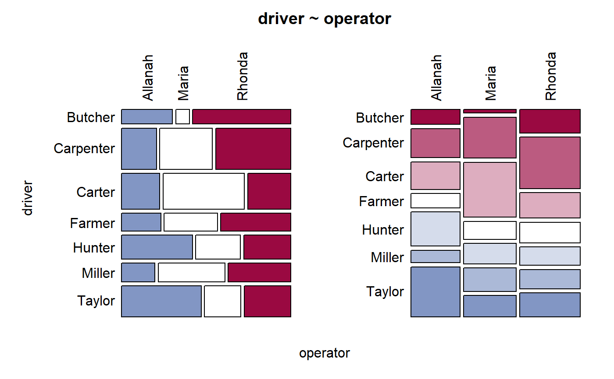Desc(driver + area ~ operator, data=d.pizza) # several factors ~ factor#> ------------------------------------------------------------------------------ #> driver ~ operator (d.pizza) #> #> Summary: #> n: 1'196, rows: 7, columns: 3 #> #> Pearson's Chi-squared test: #> X-squared = 133.06, df = 12, p-value < 2.2e-16 #> Likelihood Ratio: #> X-squared = 133.53, df = 12, p-value < 2.2e-16 #> Mantel-Haenszel Chi-squared: #> X-squared = 33.539, df = 1, p-value = 0.000000006984 #> #> Phi-Coefficient 0.334 #> Contingency Coeff. 0.316 #> Cramer's V 0.236 #> #> #> operator Allanah Maria Rhonda Sum #> driver #> #> Butcher freq 30 8 58 96 #> perc 2.5% 0.7% 4.8% 8.0% #> p.row 31.2% 8.3% 60.4% . #> p.col 8.3% 2.1% 13.0% . #> #> Carpenter freq 58 87 125 270 #> perc 4.8% 7.3% 10.5% 22.6% #> p.row 21.5% 32.2% 46.3% . #> p.col 16.0% 22.4% 28.1% . #> #> Carter freq 55 117 62 234 #> perc 4.6% 9.8% 5.2% 19.6% #> p.row 23.5% 50.0% 26.5% . #> p.col 15.2% 30.2% 13.9% . #> #> Farmer freq 28 38 50 116 #> perc 2.3% 3.2% 4.2% 9.7% #> p.row 24.1% 32.8% 43.1% . #> p.col 7.7% 9.8% 11.2% . #> #> Hunter freq 68 43 45 156 #> perc 5.7% 3.6% 3.8% 13.0% #> p.row 43.6% 27.6% 28.8% . #> p.col 18.7% 11.1% 10.1% . #> #> Miller freq 25 50 47 122 #> perc 2.1% 4.2% 3.9% 10.2% #> p.row 20.5% 41.0% 38.5% . #> p.col 6.9% 12.9% 10.6% . #> #> Taylor freq 99 45 58 202 #> perc 8.3% 3.8% 4.8% 16.9% #> p.row 49.0% 22.3% 28.7% . #> p.col 27.3% 11.6% 13.0% . #> #> Sum freq 363 388 445 1'196 #> perc 30.4% 32.4% 37.2% 100.0% #> p.row . . . . #> p.col . . . . #> #>#> ------------------------------------------------------------------------------ #> area ~ operator (d.pizza) #> #> Summary: #> n: 1'191, rows: 3, columns: 3 #> #> Pearson's Chi-squared test: #> X-squared = 17.905, df = 4, p-value = 0.001288 #> Likelihood Ratio: #> X-squared = 18.099, df = 4, p-value = 0.001181 #> Mantel-Haenszel Chi-squared: #> X-squared = 8.6654, df = 1, p-value = 0.003243 #> #> Phi-Coefficient 0.123 #> Contingency Coeff. 0.122 #> Cramer's V 0.087 #> #> #> operator Allanah Maria Rhonda Sum #> area #> #> Brent freq 153 153 167 473 #> perc 12.8% 12.8% 14.0% 39.7% #> p.row 32.3% 32.3% 35.3% . #> p.col 41.9% 39.9% 37.7% . #> #> Camden freq 123 108 109 340 #> perc 10.3% 9.1% 9.2% 28.5% #> p.row 36.2% 31.8% 32.1% . #> p.col 33.7% 28.2% 24.6% . #> #> Westminster freq 89 122 167 378 #> perc 7.5% 10.2% 14.0% 31.7% #> p.row 23.5% 32.3% 44.2% . #> p.col 24.4% 31.9% 37.7% . #> #> Sum freq 365 383 443 1'191 #> perc 30.6% 32.2% 37.2% 100.0% #> p.row . . . . #> p.col . . . . #> #>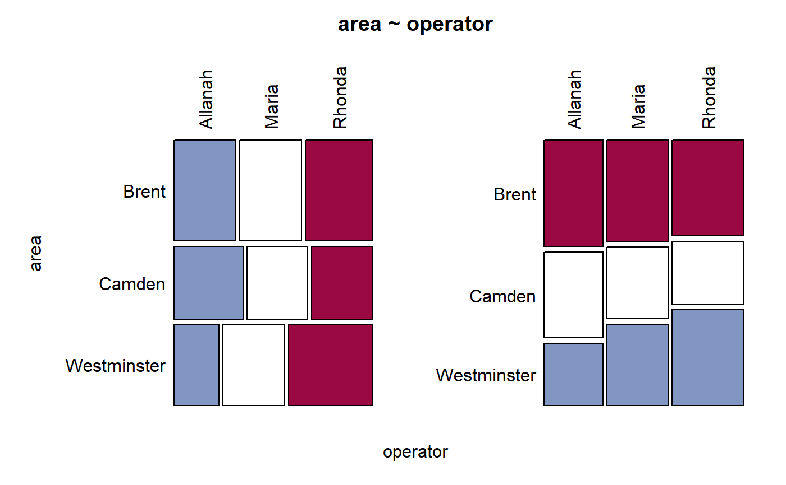Desc(driver ~ week, data=d.pizza) # factor ~ integer#> ------------------------------------------------------------------------------ #> driver ~ week (d.pizza) #> #> Summary: #> n pairs: 1'209, valid: 1'172 (96.9%), missings: 37 (3.1%), groups: 7 #> #> #> Butcher Carpenter Carter Farmer Hunter Miller #> mean 10.56989 11.82264 11.27876 11.52679 11.65806 11.60976 #> median 10.00000 12.00000 11.00000 11.00000 12.00000 12.00000 #> sd 1.12673 1.26231 1.24265 1.58233 1.24023 1.32216 #> IQR 2.00000 2.00000 2.00000 3.00000 2.00000 3.00000 #> n 93 265 226 112 155 123 #> np 7.93515% 22.61092% 19.28328% 9.55631% 13.22526% 10.49488% #> NAs 3 7 8 5 1 2 #> 0s 0 0 0 0 0 0 #> #> Taylor #> mean 10.99495 #> median 11.00000 #> sd 1.21954 #> IQR 2.00000 #> n 198 #> np 16.89420% #> NAs 6 #> 0s 0 #> #> Kruskal-Wallis rank sum test: #> Kruskal-Wallis chi-squared = 89.647, df = 6, p-value < 2.2e-16 #> Warning: #> Grouping variable contains 5 NAs (0.414%). #> #> #> #> Proportions of driver in the quantiles of week: #> #> Q1 Q2 Q3 Q4 #> Butcher 13.7% 7.2% 5.1% 0.0% #> Carpenter 15.5% 23.2% 25.0% 52.9% #> Carter 22.4% 19.4% 17.5% 14.7% #> Farmer 9.9% 9.9% 7.7% 32.4% #> Hunter 8.7% 11.8% 17.7% 0.0% #> Miller 9.9% 7.6% 13.0% 0.0% #> Taylor 19.8% 20.9% 14.1% 0.0% #>Desc(driver ~ operator, data=d.pizza, rfrq="111") # alle rel. frequencies#> ------------------------------------------------------------------------------ #> driver ~ operator (d.pizza) #> #> Summary: #> n: 1'196, rows: 7, columns: 3 #> #> Pearson's Chi-squared test: #> X-squared = 133.06, df = 12, p-value < 2.2e-16 #> Likelihood Ratio: #> X-squared = 133.53, df = 12, p-value < 2.2e-16 #> Mantel-Haenszel Chi-squared: #> X-squared = 33.539, df = 1, p-value = 0.000000006984 #> #> Phi-Coefficient 0.334 #> Contingency Coeff. 0.316 #> Cramer's V 0.236 #> #> #> operator Allanah Maria Rhonda Sum #> driver #> #> Butcher freq 30 8 58 96 #> perc 2.5% 0.7% 4.8% 8.0% #> p.row 31.2% 8.3% 60.4% . #> p.col 8.3% 2.1% 13.0% . #> #> Carpenter freq 58 87 125 270 #> perc 4.8% 7.3% 10.5% 22.6% #> p.row 21.5% 32.2% 46.3% . #> p.col 16.0% 22.4% 28.1% . #> #> Carter freq 55 117 62 234 #> perc 4.6% 9.8% 5.2% 19.6% #> p.row 23.5% 50.0% 26.5% . #> p.col 15.2% 30.2% 13.9% . #> #> Farmer freq 28 38 50 116 #> perc 2.3% 3.2% 4.2% 9.7% #> p.row 24.1% 32.8% 43.1% . #> p.col 7.7% 9.8% 11.2% . #> #> Hunter freq 68 43 45 156 #> perc 5.7% 3.6% 3.8% 13.0% #> p.row 43.6% 27.6% 28.8% . #> p.col 18.7% 11.1% 10.1% . #> #> Miller freq 25 50 47 122 #> perc 2.1% 4.2% 3.9% 10.2% #> p.row 20.5% 41.0% 38.5% . #> p.col 6.9% 12.9% 10.6% . #> #> Taylor freq 99 45 58 202 #> perc 8.3% 3.8% 4.8% 16.9% #> p.row 49.0% 22.3% 28.7% . #> p.col 27.3% 11.6% 13.0% . #> #> Sum freq 363 388 445 1'196 #> perc 30.4% 32.4% 37.2% 100.0% #> p.row . . . . #> p.col . . . . #> #>Desc(driver ~ operator, data=d.pizza, rfrq="000", verbose=3) # no rel. frequencies#> ------------------------------------------------------------------------------ #> driver ~ operator (d.pizza) #> #> Summary: #> n: 1'196, rows: 7, columns: 3 #> #> Pearson's Chi-squared test: #> X-squared = 133.06, df = 12, p-value < 2.2e-16 #> Pearson's Chi-squared test (cont. adj): #> X-squared = 133.06, df = 12, p-value < 2.2e-16 #> Likelihood Ratio: #> X-squared = 133.53, df = 12, p-value < 2.2e-16 #> Mantel-Haenszel Chi-squared: #> X-squared = 33.539, df = 1, p-value = 0.000000006984 #> #> estimate lwr.ci upr.ci' #> Phi Coeff. 0.3336 - - #> Contingency Coeff. 0.3164 - - #> Cramer V 0.2359 0.1848 0.2668 #> Goodman Kruskal Gamma -0.1923 -0.2579 -0.1268 #> Kendall Tau-b -0.1450 -0.1947 -0.0953 #> Stuart Tau-c -0.1624 -0.2180 -0.1067 #> Somers D C|R -0.1290 -0.1733 -0.0847 #> Somers D R|C -0.1630 -0.2187 -0.1072 #> Pearson Correlation -0.1675 -0.2221 -0.1119 #> Spearman Correlation -0.1706 -0.2251 -0.1150 #> Lambda C|R 0.1625 0.1066 0.2183 #> Lambda R|C 0.0767 0.0380 0.1153 #> Lambda sym 0.1151 0.0745 0.1557 #> Uncertainty Coeff. C|R 0.0510 0.0342 0.0677 #> Uncertainty Coeff. R|C 0.0296 0.0199 0.0394 #> Uncertainty Coeff. sym 0.0375 0.0252 0.0498 #> Mutual Information 0.0805 - - #> #> #> operator Allanah Maria Rhonda Sum #> driver #> Butcher 30 8 58 96 #> Carpenter 58 87 125 270 #> Carter 55 117 62 234 #> Farmer 28 38 50 116 #> Hunter 68 43 45 156 #> Miller 25 50 47 122 #> Taylor 99 45 58 202 #> Sum 363 388 445 1'196 #> #> ---------- #> ' 95% conf. level #>Desc(price ~ delivery_min, data=d.pizza) # numeric ~ numeric#> ------------------------------------------------------------------------------ #> price ~ delivery_min (d.pizza) #> #> Summary: #> n pairs: 1'209, valid: 1'197 (99.0%), missings: 12 (1.0%) #> #> #> Pearson corr. : 0.095 #> Spearman corr.: 0.080 #> Kendall corr. : 0.054 #>Desc(price + delivery_min ~ operator + driver + wrongpizza, data=d.pizza, digits=c(2,2,2,2,0,3,0,0) )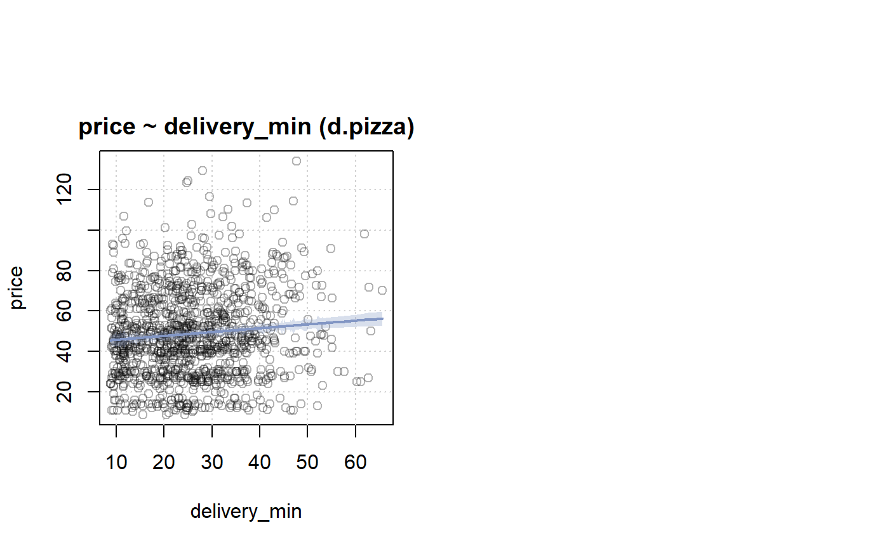#> ------------------------------------------------------------------------------ #> price ~ operator (d.pizza) #> #> Summary: #> n pairs: 1'209, valid: 1'189 (98.3%), missings: 20 (1.7%), groups: 3 #> #> #> Allanah Maria Rhonda #> mean 46.31 49.12 50.37 #> median 44.97 46.76 47.97 #> sd 20.15 21.98 22.41 #> IQR 28.87 31.83 33.43 #> n 363 384 442 #> np 31% 32% 37% #> NAs 4 4 4 #> 0s 0 0 0 #> #> Kruskal-Wallis rank sum test: #> Kruskal-Wallis chi-squared = 6.2048, df = 2, p-value = 0.04494 #> Warning: #> Grouping variable contains 8 NAs (0.662%). #>#> ------------------------------------------------------------------------------ #> price ~ driver (d.pizza) #> #> Summary: #> n pairs: 1'209, valid: 1'192 (98.6%), missings: 17 (1.4%), groups: 7 #> #> #> Butcher Carpenter Carter Farmer Hunter Miller #> mean 45.88 54.19 45.45 49.50 44.29 50.02 #> median 44.97 50.36 43.97 47.66 42.71 46.97 #> sd 20.74 24.23 21.66 18.53 19.67 21.32 #> IQR 27.88 32.68 32.28 20.39 23.98 35.57 #> n 94 270 231 117 154 125 #> np 8% 23% 19% 10% 13% 10% #> NAs 2 2 3 0 2 0 #> 0s 0 0 0 0 0 0 #> #> Taylor #> mean 48.46 #> median 46.97 #> sd 19.97 #> IQR 28.99 #> n 201 #> np 17% #> NAs 3 #> 0s 0 #> #> Kruskal-Wallis rank sum test: #> Kruskal-Wallis chi-squared = 26.137, df = 6, p-value = 0.0002099 #> Warning: #> Grouping variable contains 5 NAs (0.414%). #>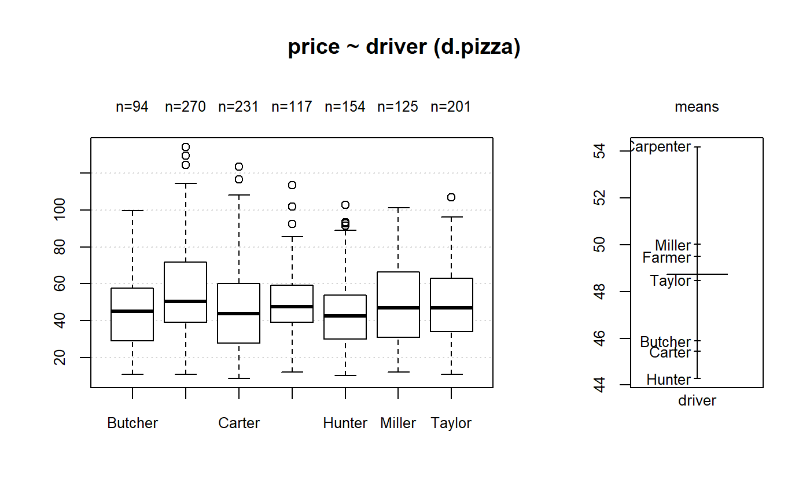#> ------------------------------------------------------------------------------ #> price ~ wrongpizza (d.pizza) #> #> Summary: #> n pairs: 1'209, valid: 1'193 (98.7%), missings: 16 (1.3%), groups: 2 #> #> #> FALSE TRUE #> mean 48.57 51.41 #> median 46.76 48.56 #> sd 21.60 22.21 #> IQR 32.09 34.05 #> n 1'111 82 #> np 93% 7% #> NAs 11 1 #> 0s 0 0 #> #> Kruskal-Wallis rank sum test: #> Kruskal-Wallis chi-squared = 1.2512, df = 1, p-value = 0.2633 #> Warning: #> Grouping variable contains 4 NAs (0.331%). #>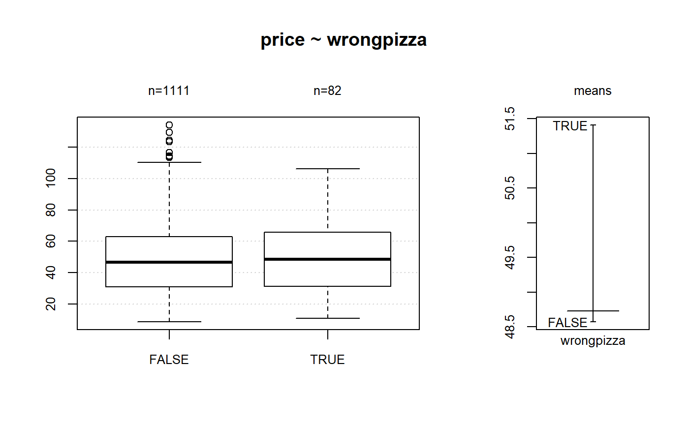#> ------------------------------------------------------------------------------ #> delivery_min ~ operator (d.pizza) #> #> Summary: #> n pairs: 1'209, valid: 1'201 (99.3%), missings: 8 (0.7%), groups: 3 #> #> #> Allanah Maria Rhonda #> mean 23.82 26.90 26.06 #> median 22.70 25.65 24.75 #> sd 10.34 11.06 10.86 #> IQR 15.55 15.18 14.88 #> n 367 388 446 #> np 31% 32% 37% #> NAs 0 0 0 #> 0s 0 0 0 #> #> Kruskal-Wallis rank sum test: #> Kruskal-Wallis chi-squared = 15.847, df = 2, p-value = 0.0003622 #> Warning: #> Grouping variable contains 8 NAs (0.662%). #>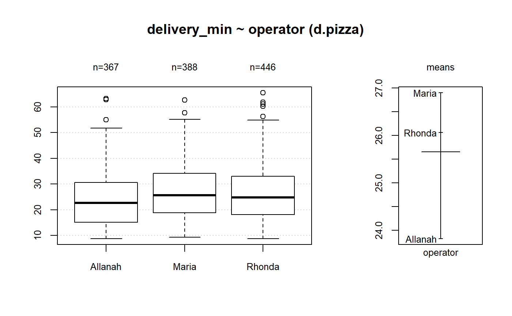#> ------------------------------------------------------------------------------ #> delivery_min ~ driver (d.pizza) #> #> Summary: #> n pairs: 1'209, valid: 1'204 (99.6%), missings: 5 (0.4%), groups: 7 #> #> #> Butcher Carpenter Carter Farmer Hunter Miller #> mean 18.88 32.73 24.41 20.15 18.51 25.55 #> median 16.85 32.85 24.00 19.20 16.65 24.90 #> sd 9.41 11.28 8.84 7.41 8.37 8.80 #> IQR 14.40 15.12 11.82 9.60 10.53 10.80 #> n 96 272 234 117 156 125 #> np 8% 23% 19% 10% 13% 10% #> NAs 0 0 0 0 0 0 #> 0s 0 0 0 0 0 0 #> #> Taylor #> mean 29.52 #> median 28.20 #> sd 10.13 #> IQR 13.85 #> n 204 #> np 17% #> NAs 0 #> 0s 0 #> #> Kruskal-Wallis rank sum test: #> Kruskal-Wallis chi-squared = 289.47, df = 6, p-value < 2.2e-16 #> Warning: #> Grouping variable contains 5 NAs (0.414%). #>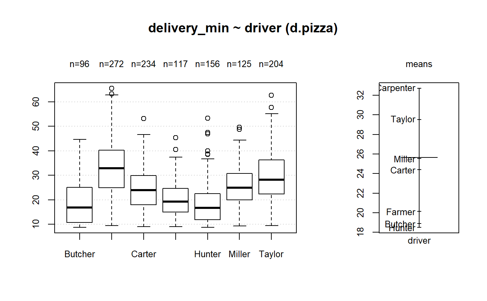#> ------------------------------------------------------------------------------ #> delivery_min ~ wrongpizza (d.pizza) #> #> Summary: #> n pairs: 1'209, valid: 1'205 (99.7%), missings: 4 (0.3%), groups: 2 #> #> #> FALSE TRUE #> mean 25.62 26.11 #> median 24.35 25.30 #> sd 10.87 10.60 #> IQR 15.07 15.10 #> n 1'122 83 #> np 93% 7% #> NAs 0 0 #> 0s 0 0 #> #> Kruskal-Wallis rank sum test: #> Kruskal-Wallis chi-squared = 0.36826, df = 1, p-value = 0.544 #> Warning: #> Grouping variable contains 4 NAs (0.331%). #>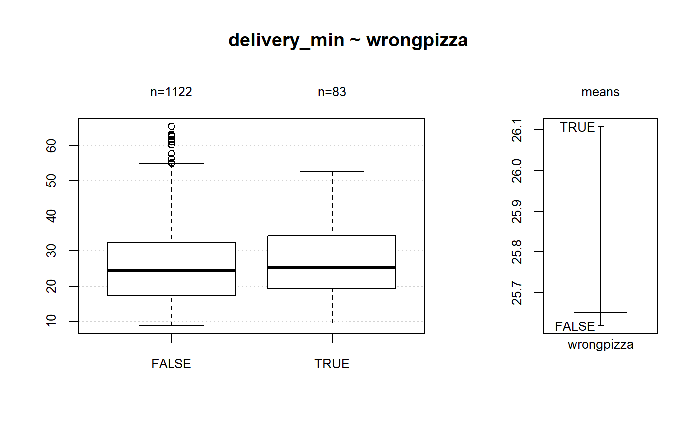#> ------------------------------------------------------------------------------ #> week ~ driver (d.pizza) #> #> Summary: #> n pairs: 1'209, valid: 1'172 (96.9%), missings: 37 (3.1%), groups: 7 #> #> #> Butcher Carpenter Carter Farmer Hunter Miller #> mean 10.57 11.82 11.28 11.53 11.66 11.61 #> median 10.00 12.00 11.00 11.00 12.00 12.00 #> sd 1.13 1.26 1.24 1.58 1.24 1.32 #> IQR 2.00 2.00 2.00 3.00 2.00 3.00 #> n 93 265 226 112 155 123 #> np 8% 23% 19% 10% 13% 10% #> NAs 3 7 8 5 1 2 #> 0s 0 0 0 0 0 0 #> #> Taylor #> mean 10.99 #> median 11.00 #> sd 1.22 #> IQR 2.00 #> n 198 #> np 17% #> NAs 6 #> 0s 0 #> #> Kruskal-Wallis rank sum test: #> Kruskal-Wallis chi-squared = 89.647, df = 6, p-value < 2.2e-16 #> Warning: #> Grouping variable contains 5 NAs (0.414%). #>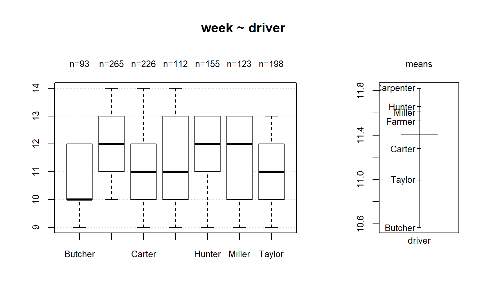Desc(delivery_min + weekday ~ driver, data=d.pizza)#> ------------------------------------------------------------------------------ #> delivery_min ~ driver (d.pizza) #> #> Summary: #> n pairs: 1'209, valid: 1'204 (99.6%), missings: 5 (0.4%), groups: 7 #> #> #> Butcher Carpenter Carter Farmer Hunter Miller #> mean 18.88125 32.73235 24.40684 20.15214 18.51474 25.54720 #> median 16.85000 32.85000 24.00000 19.20000 16.65000 24.90000 #> sd 9.40621 11.28065 8.84066 7.40856 8.37358 8.80189 #> IQR 14.40000 15.12500 11.82500 9.60000 10.52500 10.80000 #> n 96 272 234 117 156 125 #> np 7.97342% 22.59136% 19.43522% 9.71761% 12.95681% 10.38206% #> NAs 0 0 0 0 0 0 #> 0s 0 0 0 0 0 0 #> #> Taylor #> mean 29.52402 #> median 28.20000 #> sd 10.13141 #> IQR 13.85000 #> n 204 #> np 16.94352% #> NAs 0 #> 0s 0 #> #> Kruskal-Wallis rank sum test: #> Kruskal-Wallis chi-squared = 289.47, df = 6, p-value < 2.2e-16 #> Warning: #> Grouping variable contains 5 NAs (0.414%). #>#> ------------------------------------------------------------------------------ #> weekday ~ driver (d.pizza) #> #> Summary: #> n pairs: 1'209, valid: 1'172 (96.9%), missings: 37 (3.1%), groups: 7 #> #> #> Butcher Carpenter Carter Farmer Hunter Miller #> mean 6.47312 4.70943 3.80531 3.83036 3.90323 5.01626 #> median 6.00000 5.00000 4.00000 4.00000 3.00000 5.00000 #> sd 0.50198 1.97391 1.57400 1.75985 2.39256 1.45975 #> IQR 1.00000 2.00000 2.75000 2.00000 5.00000 1.50000 #> n 93 265 226 112 155 123 #> np 7.93515% 22.61092% 19.28328% 9.55631% 13.22526% 10.49488% #> NAs 3 7 8 5 1 2 #> 0s 0 0 0 0 0 0 #> #> Taylor #> mean 4.29798 #> median 6.00000 #> sd 2.29922 #> IQR 4.00000 #> n 198 #> np 16.89420% #> NAs 6 #> 0s 0 #> #> Kruskal-Wallis rank sum test: #> Kruskal-Wallis chi-squared = 164.67, df = 6, p-value < 2.2e-16 #> Warning: #> Grouping variable contains 5 NAs (0.414%). #>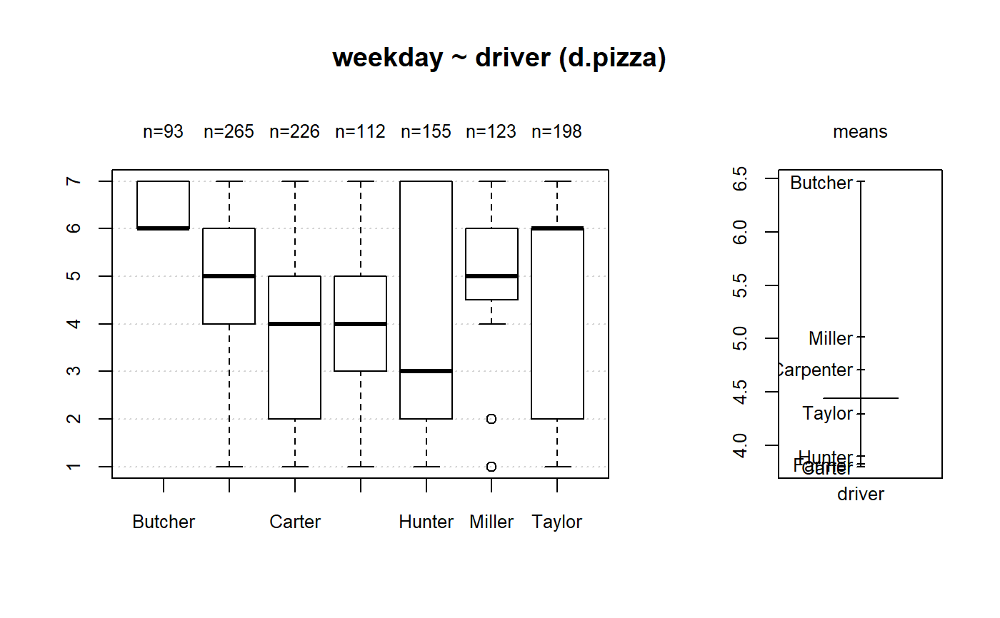# without defining data-parameter Desc(d.pizza$delivery_min ~ d.pizza$driver)#> ------------------------------------------------------------------------------ #> d.pizza$delivery_min ~ d.pizza$driver (parent.frame()) #> #> Summary: #> n pairs: 1'209, valid: 1'204 (99.6%), missings: 5 (0.4%), groups: 7 #> #> #> Butcher Carpenter Carter Farmer Hunter Miller #> mean 18.88125 32.73235 24.40684 20.15214 18.51474 25.54720 #> median 16.85000 32.85000 24.00000 19.20000 16.65000 24.90000 #> sd 9.40621 11.28065 8.84066 7.40856 8.37358 8.80189 #> IQR 14.40000 15.12500 11.82500 9.60000 10.52500 10.80000 #> n 96 272 234 117 156 125 #> np 7.97342% 22.59136% 19.43522% 9.71761% 12.95681% 10.38206% #> NAs 0 0 0 0 0 0 #> 0s 0 0 0 0 0 0 #> #> Taylor #> mean 29.52402 #> median 28.20000 #> sd 10.13141 #> IQR 13.85000 #> n 204 #> np 16.94352% #> NAs 0 #> 0s 0 #> #> Kruskal-Wallis rank sum test: #> Kruskal-Wallis chi-squared = 289.47, df = 6, p-value < 2.2e-16 #> Warning: #> Grouping variable contains 5 NAs (0.414%). #>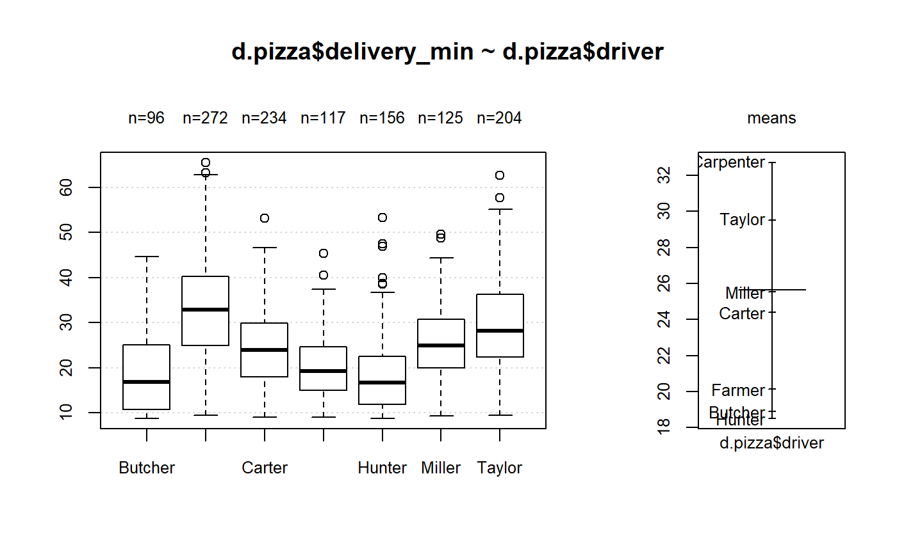#> ------------------------------------------------------------------------------ #> sqrt(price) ~ operator:factor(wrongpizza) (d.pizza) #> #> Summary: #> n pairs: 1'209, valid: 1'185 (98.0%), missings: 24 (2.0%), groups: 6 #> #> #> Allanah:FALSE Maria:FALSE Rhonda:FALSE Allanah:TRUE #> mean 6.62506 6.79423 6.91301 7.23357 #> median 6.70597 6.78012 6.92965 7.46194 #> sd 1.53011 1.57618 1.64992 1.28011 #> IQR 2.19071 2.29395 2.50547 0.93878 #> n 359 313 432 4 #> np 30.29536% 26.41350% 36.45570% 0.33755% #> NAs 4 3 4 0 #> 0s 0 0 0 0 #> #> Maria:TRUE Rhonda:TRUE #> mean 7.02072 6.50934 #> median 6.96879 6.81679 #> sd 1.63467 1.46372 #> IQR 2.64658 1.06284 #> n 69 8 #> np 5.82278% 0.67511% #> NAs 1 0 #> 0s 0 0 #> #> Kruskal-Wallis rank sum test: #> Kruskal-Wallis chi-squared = 8.5064, df = 5, p-value = 0.1304 #> Warning: #> Grouping variable contains 12 NAs (0.993%). #>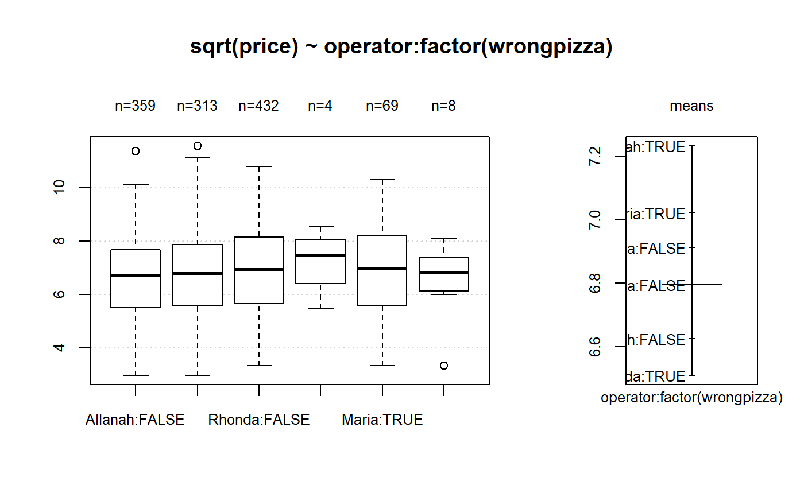Desc(log(price+1) ~ cut(delivery_min, breaks=seq(10,90,10)), data=d.pizza, digits=c(2,2,2,2,0,3,0,0))#> ------------------------------------------------------------------------------ #> log(price + 1) ~ cut(delivery_min, breaks = seq(10, 90, 10)) (d.pizza) #> #> Summary: #> n pairs: 1'209, valid: 1'147 (94.9%), missings: 62 (5.1%), groups: 6 #> #> #> (10,20] (20,30] (30,40] (40,50] (50,60] (60,70] #> mean 3.77 3.80 3.81 3.90 3.84 3.85 #> median 3.83 3.87 3.87 4.01 3.89 3.93 #> sd 0.46 0.51 0.48 0.56 0.44 0.56 #> IQR 0.65 0.68 0.68 0.70 0.73 0.98 #> n 346 427 245 98 24 7 #> np 30% 37% 21% 9% 2% 1% #> NAs 5 3 3 1 0 0 #> 0s 0 0 0 0 0 0 #> #> Kruskal-Wallis rank sum test: #> Kruskal-Wallis chi-squared = 8.1513, df = 5, p-value = 0.1481 #> Warning: #> Grouping variable contains 50 NAs (4.14%). #>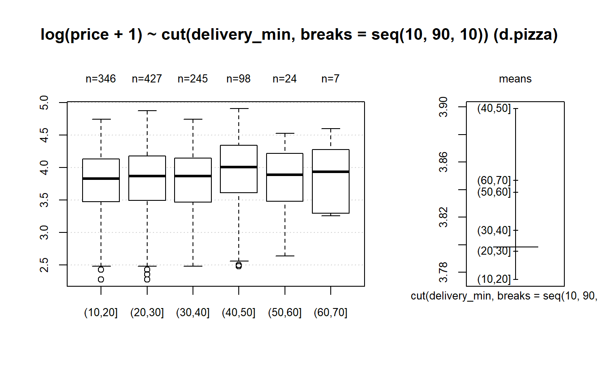# response versus all the rest Desc(driver ~ ., data=d.pizza[, c("temperature","wine_delivered","area","driver")])#> ------------------------------------------------------------------------------ #> driver ~ temperature (d.pizza[, c("temperature", "wine_delivered", "area", "driver")]) #> #> Summary: #> n pairs: 1'209, valid: 1'166 (96.4%), missings: 43 (3.6%), groups: 7 #> #> #> Butcher Carpenter Carter Farmer Hunter Miller #> mean 49.61719 43.49348 50.41925 50.93675 52.14135 47.52397 #> median 51.40000 44.80000 51.75000 54.10000 55.10000 49.60000 #> sd 8.78704 9.40667 8.46700 9.02373 8.88544 8.93474 #> IQR 11.97500 12.50000 11.32500 11.20000 11.57500 8.80000 #> n 96 253 226 117 156 121 #> np 8.23328% 21.69811% 19.38250% 10.03431% 13.37907% 10.37736% #> NAs 0 19 8 0 0 4 #> 0s 0 0 0 0 0 0 #> #> Taylor #> mean 45.09061 #> median 48.50000 #> sd 11.44201 #> IQR 18.40000 #> n 197 #> np 16.89537% #> NAs 7 #> 0s 0 #> #> Kruskal-Wallis rank sum test: #> Kruskal-Wallis chi-squared = 141.93, df = 6, p-value < 2.2e-16 #> Warning: #> Grouping variable contains 5 NAs (0.414%). #> #> #> #> Proportions of driver in the quantiles of temperature: #> #> Q1 Q2 Q3 Q4 #> Butcher 6.8% 8.1% 7.3% 10.7% #> Carpenter 34.9% 28.8% 15.9% 6.9% #> Carter 13.7% 18.3% 21.1% 24.5% #> Farmer 6.5% 4.7% 14.9% 14.1% #> Hunter 7.5% 9.5% 11.8% 24.8% #> Miller 9.2% 12.9% 13.1% 6.2% #> Taylor 21.2% 17.6% 15.9% 12.8% #>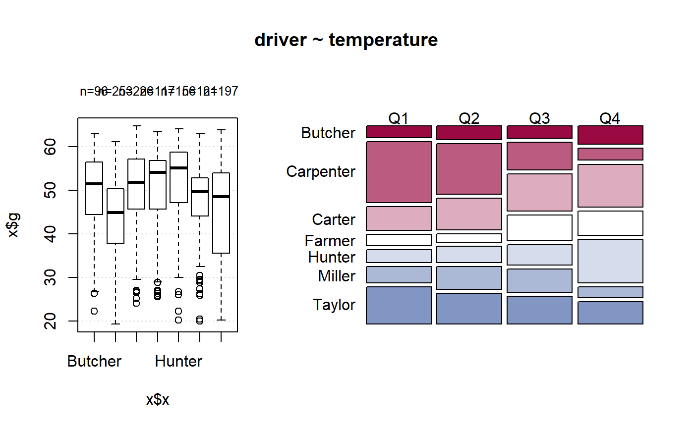#> ------------------------------------------------------------------------------ #> driver ~ wine_delivered (d.pizza[, c("temperature", "wine_delivered", "area", "driver")]) #> #> Summary: #> n: 1'192, rows: 7, columns: 2 #> #> Pearson's Chi-squared test: #> X-squared = 21.029, df = 6, p-value = 0.001813 #> Likelihood Ratio: #> X-squared = 20.646, df = 6, p-value = 0.002123 #> Mantel-Haenszel Chi-squared: #> X-squared = 0.58591, df = 1, p-value = 0.444 #> #> Phi-Coefficient 0.133 #> Contingency Coeff. 0.132 #> Cramer's V 0.133 #> #> #> wine_delivered 0 1 Sum #> driver #> #> Butcher freq 85 9 94 #> perc 7.1% 0.8% 7.9% #> p.row 90.4% 9.6% . #> p.col 8.2% 5.6% . #> #> Carpenter freq 214 56 270 #> perc 18.0% 4.7% 22.7% #> p.row 79.3% 20.7% . #> p.col 20.8% 34.8% . #> #> Carter freq 212 19 231 #> perc 17.8% 1.6% 19.4% #> p.row 91.8% 8.2% . #> p.col 20.6% 11.8% . #> #> Farmer freq 100 17 117 #> perc 8.4% 1.4% 9.8% #> p.row 85.5% 14.5% . #> p.col 9.7% 10.6% . #> #> Hunter freq 139 15 154 #> perc 11.7% 1.3% 12.9% #> p.row 90.3% 9.7% . #> p.col 13.5% 9.3% . #> #> Miller freq 109 16 125 #> perc 9.1% 1.3% 10.5% #> p.row 87.2% 12.8% . #> p.col 10.6% 9.9% . #> #> Taylor freq 172 29 201 #> perc 14.4% 2.4% 16.9% #> p.row 85.6% 14.4% . #> p.col 16.7% 18.0% . #> #> Sum freq 1'031 161 1'192 #> perc 86.5% 13.5% 100.0% #> p.row . . . #> p.col . . . #> #>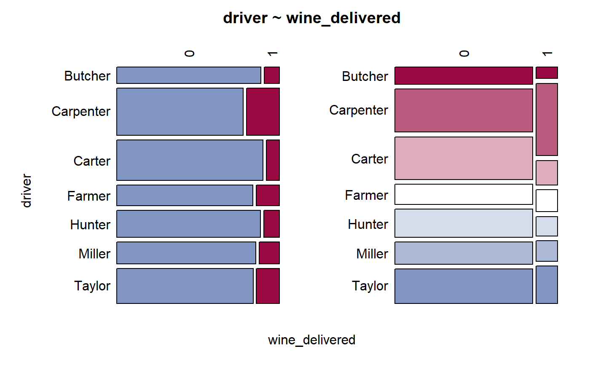#> ------------------------------------------------------------------------------ #> driver ~ area (d.pizza[, c("temperature", "wine_delivered", "area", "driver")]) #> #> Summary: #> n: 1'194, rows: 7, columns: 3 #> #> Pearson's Chi-squared test: #> X-squared = 1009.5, df = 12, p-value < 2.2e-16 #> Likelihood Ratio: #> X-squared = 1020.9, df = 12, p-value < 2.2e-16 #> Mantel-Haenszel Chi-squared: #> X-squared = 2.6144, df = 1, p-value = 0.1059 #> #> Phi-Coefficient 0.919 #> Contingency Coeff. 0.677 #> Cramer's V 0.650 #> #> #> area Brent Camden Westminster Sum #> driver #> #> Butcher freq 72 1 22 95 #> perc 6.0% 0.1% 1.8% 8.0% #> p.row 75.8% 1.1% 23.2% . #> p.col 15.2% 0.3% 5.8% . #> #> Carpenter freq 29 19 221 269 #> perc 2.4% 1.6% 18.5% 22.5% #> p.row 10.8% 7.1% 82.2% . #> p.col 6.1% 5.6% 58.2% . #> #> Carter freq 177 47 5 229 #> perc 14.8% 3.9% 0.4% 19.2% #> p.row 77.3% 20.5% 2.2% . #> p.col 37.4% 13.8% 1.3% . #> #> Farmer freq 19 87 11 117 #> perc 1.6% 7.3% 0.9% 9.8% #> p.row 16.2% 74.4% 9.4% . #> p.col 4.0% 25.5% 2.9% . #> #> Hunter freq 128 4 24 156 #> perc 10.7% 0.3% 2.0% 13.1% #> p.row 82.1% 2.6% 15.4% . #> p.col 27.1% 1.2% 6.3% . #> #> Miller freq 6 41 77 124 #> perc 0.5% 3.4% 6.4% 10.4% #> p.row 4.8% 33.1% 62.1% . #> p.col 1.3% 12.0% 20.3% . #> #> Taylor freq 42 142 20 204 #> perc 3.5% 11.9% 1.7% 17.1% #> p.row 20.6% 69.6% 9.8% . #> p.col 8.9% 41.6% 5.3% . #> #> Sum freq 473 341 380 1'194 #> perc 39.6% 28.6% 31.8% 100.0% #> p.row . . . . #> p.col . . . . #> #># all the rest versus response Desc(. ~ driver, data=d.pizza[, c("temperature","wine_delivered","area","driver")])#> ------------------------------------------------------------------------------ #> temperature ~ driver (d.pizza[, c("temperature", "wine_delivered", "area", "driver")]) #> #> Summary: #> n pairs: 1'209, valid: 1'166 (96.4%), missings: 43 (3.6%), groups: 7 #> #> #> Butcher Carpenter Carter Farmer Hunter Miller #> mean 49.61719 43.49348 50.41925 50.93675 52.14135 47.52397 #> median 51.40000 44.80000 51.75000 54.10000 55.10000 49.60000 #> sd 8.78704 9.40667 8.46700 9.02373 8.88544 8.93474 #> IQR 11.97500 12.50000 11.32500 11.20000 11.57500 8.80000 #> n 96 253 226 117 156 121 #> np 8.23328% 21.69811% 19.38250% 10.03431% 13.37907% 10.37736% #> NAs 0 19 8 0 0 4 #> 0s 0 0 0 0 0 0 #> #> Taylor #> mean 45.09061 #> median 48.50000 #> sd 11.44201 #> IQR 18.40000 #> n 197 #> np 16.89537% #> NAs 7 #> 0s 0 #> #> Kruskal-Wallis rank sum test: #> Kruskal-Wallis chi-squared = 141.93, df = 6, p-value < 2.2e-16 #> Warning: #> Grouping variable contains 5 NAs (0.414%). #>#> ------------------------------------------------------------------------------ #> wine_delivered ~ driver (d.pizza[, c("temperature", "wine_delivered", "area", "driver")]) #> #> Summary: #> n: 1'192, rows: 2, columns: 7 #> #> Pearson's Chi-squared test: #> X-squared = 21.029, df = 6, p-value = 0.001813 #> Likelihood Ratio: #> X-squared = 20.646, df = 6, p-value = 0.002123 #> Mantel-Haenszel Chi-squared: #> X-squared = 0.58591, df = 1, p-value = 0.444 #> #> Phi-Coefficient 0.133 #> Contingency Coeff. 0.132 #> Cramer's V 0.133 #> #> #> driver Butcher Carpenter Carter Farmer Hunter #> wine_delivered #> #> 0 freq 85 214 212 100 139 #> perc 7.1% 18.0% 17.8% 8.4% 11.7% #> p.row 8.2% 20.8% 20.6% 9.7% 13.5% #> p.col 90.4% 79.3% 91.8% 85.5% 90.3% #> #> 1 freq 9 56 19 17 15 #> perc 0.8% 4.7% 1.6% 1.4% 1.3% #> p.row 5.6% 34.8% 11.8% 10.6% 9.3% #> p.col 9.6% 20.7% 8.2% 14.5% 9.7% #> #> Sum freq 94 270 231 117 154 #> perc 7.9% 22.7% 19.4% 9.8% 12.9% #> p.row . . . . . #> p.col . . . . . #> #> #> driver Miller Taylor Sum #> wine_delivered #> #> 0 freq 109 172 1'031 #> perc 9.1% 14.4% 86.5% #> p.row 10.6% 16.7% . #> p.col 87.2% 85.6% . #> #> 1 freq 16 29 161 #> perc 1.3% 2.4% 13.5% #> p.row 9.9% 18.0% . #> p.col 12.8% 14.4% . #> #> Sum freq 125 201 1'192 #> perc 10.5% 16.9% 100.0% #> p.row . . . #> p.col . . . #> #>#> ------------------------------------------------------------------------------ #> area ~ driver (d.pizza[, c("temperature", "wine_delivered", "area", "driver")]) #> #> Summary: #> n: 1'194, rows: 3, columns: 7 #> #> Pearson's Chi-squared test: #> X-squared = 1009.5, df = 12, p-value < 2.2e-16 #> Likelihood Ratio: #> X-squared = 1020.9, df = 12, p-value < 2.2e-16 #> Mantel-Haenszel Chi-squared: #> X-squared = 2.6144, df = 1, p-value = 0.1059 #> #> Phi-Coefficient 0.919 #> Contingency Coeff. 0.677 #> Cramer's V 0.650 #> #> #> driver Butcher Carpenter Carter Farmer Hunter Miller #> area #> #> Brent freq 72 29 177 19 128 6 #> perc 6.0% 2.4% 14.8% 1.6% 10.7% 0.5% #> p.row 15.2% 6.1% 37.4% 4.0% 27.1% 1.3% #> p.col 75.8% 10.8% 77.3% 16.2% 82.1% 4.8% #> #> Camden freq 1 19 47 87 4 41 #> perc 0.1% 1.6% 3.9% 7.3% 0.3% 3.4% #> p.row 0.3% 5.6% 13.8% 25.5% 1.2% 12.0% #> p.col 1.1% 7.1% 20.5% 74.4% 2.6% 33.1% #> #> Westminster freq 22 221 5 11 24 77 #> perc 1.8% 18.5% 0.4% 0.9% 2.0% 6.4% #> p.row 5.8% 58.2% 1.3% 2.9% 6.3% 20.3% #> p.col 23.2% 82.2% 2.2% 9.4% 15.4% 62.1% #> #> Sum freq 95 269 229 117 156 124 #> perc 8.0% 22.5% 19.2% 9.8% 13.1% 10.4% #> p.row . . . . . . #> p.col . . . . . . #> #> #> driver Taylor Sum #> area #> #> Brent freq 42 473 #> perc 3.5% 39.6% #> p.row 8.9% . #> p.col 20.6% . #> #> Camden freq 142 341 #> perc 11.9% 28.6% #> p.row 41.6% . #> p.col 69.6% . #> #> Westminster freq 20 380 #> perc 1.7% 31.8% #> p.row 5.3% . #> p.col 9.8% . #> #> Sum freq 204 1'194 #> perc 17.1% 100.0% #> p.row . . #> p.col . . #> #># pairwise Descriptions p <- CombPairs(c("area","count","operator","driver","temperature","wrongpizza","quality"), ) for(i in 1:nrow(p)) print(Desc(formula(gettextf("%s ~ %s", p$X1[i], p$X2[i])), data=d.pizza))#> ------------------------------------------------------------------------------ #> area ~ count (d.pizza) #> #> Summary: #> n pairs: 1'209, valid: 1'187 (98.2%), missings: 22 (1.8%), groups: 3 #> #> #> Brent Camden Westminster #> mean 3.37045 3.40643 3.56614 #> median 3.00000 3.00000 3.00000 #> sd 1.54122 1.48946 1.62609 #> IQR 2.00000 2.00000 3.00000 #> n 467 342 378 #> np 39.34288% 28.81213% 31.84499% #> NAs 7 2 3 #> 0s 0 0 0 #> #> Kruskal-Wallis rank sum test: #> Kruskal-Wallis chi-squared = 2.8703, df = 2, p-value = 0.2381 #> Warning: #> Grouping variable contains 10 NAs (0.827%). #> #> #> #> Proportions of area in the quantiles of count: #> #> Q1 Q2 Q3 Q4 #> Brent 40.9% 39.9% 38.4% 37.5% #> Camden 28.6% 30.9% 29.5% 26.4% #> Westminster 30.5% 29.2% 32.1% 36.1% #>#> ------------------------------------------------------------------------------ #> area ~ operator (d.pizza) #> #> Summary: #> n: 1'191, rows: 3, columns: 3 #> #> Pearson's Chi-squared test: #> X-squared = 17.905, df = 4, p-value = 0.001288 #> Likelihood Ratio: #> X-squared = 18.099, df = 4, p-value = 0.001181 #> Mantel-Haenszel Chi-squared: #> X-squared = 8.6654, df = 1, p-value = 0.003243 #> #> Phi-Coefficient 0.123 #> Contingency Coeff. 0.122 #> Cramer's V 0.087 #> #> #> operator Allanah Maria Rhonda Sum #> area #> #> Brent freq 153 153 167 473 #> perc 12.8% 12.8% 14.0% 39.7% #> p.row 32.3% 32.3% 35.3% . #> p.col 41.9% 39.9% 37.7% . #> #> Camden freq 123 108 109 340 #> perc 10.3% 9.1% 9.2% 28.5% #> p.row 36.2% 31.8% 32.1% . #> p.col 33.7% 28.2% 24.6% . #> #> Westminster freq 89 122 167 378 #> perc 7.5% 10.2% 14.0% 31.7% #> p.row 23.5% 32.3% 44.2% . #> p.col 24.4% 31.9% 37.7% . #> #> Sum freq 365 383 443 1'191 #> perc 30.6% 32.2% 37.2% 100.0% #> p.row . . . . #> p.col . . . . #> #>#> ------------------------------------------------------------------------------ #> area ~ driver (d.pizza) #> #> Summary: #> n: 1'194, rows: 3, columns: 7 #> #> Pearson's Chi-squared test: #> X-squared = 1009.5, df = 12, p-value < 2.2e-16 #> Likelihood Ratio: #> X-squared = 1020.9, df = 12, p-value < 2.2e-16 #> Mantel-Haenszel Chi-squared: #> X-squared = 2.6144, df = 1, p-value = 0.1059 #> #> Phi-Coefficient 0.919 #> Contingency Coeff. 0.677 #> Cramer's V 0.650 #> #> #> driver Butcher Carpenter Carter Farmer Hunter Miller #> area #> #> Brent freq 72 29 177 19 128 6 #> perc 6.0% 2.4% 14.8% 1.6% 10.7% 0.5% #> p.row 15.2% 6.1% 37.4% 4.0% 27.1% 1.3% #> p.col 75.8% 10.8% 77.3% 16.2% 82.1% 4.8% #> #> Camden freq 1 19 47 87 4 41 #> perc 0.1% 1.6% 3.9% 7.3% 0.3% 3.4% #> p.row 0.3% 5.6% 13.8% 25.5% 1.2% 12.0% #> p.col 1.1% 7.1% 20.5% 74.4% 2.6% 33.1% #> #> Westminster freq 22 221 5 11 24 77 #> perc 1.8% 18.5% 0.4% 0.9% 2.0% 6.4% #> p.row 5.8% 58.2% 1.3% 2.9% 6.3% 20.3% #> p.col 23.2% 82.2% 2.2% 9.4% 15.4% 62.1% #> #> Sum freq 95 269 229 117 156 124 #> perc 8.0% 22.5% 19.2% 9.8% 13.1% 10.4% #> p.row . . . . . . #> p.col . . . . . . #> #> #> driver Taylor Sum #> area #> #> Brent freq 42 473 #> perc 3.5% 39.6% #> p.row 8.9% . #> p.col 20.6% . #> #> Camden freq 142 341 #> perc 11.9% 28.6% #> p.row 41.6% . #> p.col 69.6% . #> #> Westminster freq 20 380 #> perc 1.7% 31.8% #> p.row 5.3% . #> p.col 9.8% . #> #> Sum freq 204 1'194 #> perc 17.1% 100.0% #> p.row . . #> p.col . . #> #>#> ------------------------------------------------------------------------------ #> area ~ temperature (d.pizza) #> #> Summary: #> n pairs: 1'209, valid: 1'161 (96.0%), missings: 48 (4.0%), groups: 3 #> #> #> Brent Camden Westminster #> mean 51.13876 47.42030 44.25850 #> median 53.40000 50.30000 45.90000 #> sd 8.73353 10.11051 9.83558 #> IQR 10.50000 12.20000 13.20000 #> n 467 335 359 #> np 40.22394% 28.85444% 30.92162% #> NAs 7 9 22 #> 0s 0 0 0 #> #> Kruskal-Wallis rank sum test: #> Kruskal-Wallis chi-squared = 115.83, df = 2, p-value < 2.2e-16 #> Warning: #> Grouping variable contains 10 NAs (0.827%). #> #> #> #> Proportions of area in the quantiles of temperature: #> #> Q1 Q2 Q3 Q4 #> Brent 24.4% 34.5% 40.5% 61.8% #> Camden 28.9% 26.6% 36.3% 23.6% #> Westminster 46.7% 38.9% 23.2% 14.6% #>#> ------------------------------------------------------------------------------ #> area ~ wrongpizza (d.pizza) #> #> Summary: #> n: 1'195, rows: 3, columns: 2 #> #> Pearson's Chi-squared test: #> X-squared = 1.3919, df = 2, p-value = 0.4986 #> Likelihood Ratio: #> X-squared = 1.3558, df = 2, p-value = 0.5077 #> Mantel-Haenszel Chi-squared: #> X-squared = 0.11732, df = 1, p-value = 0.732 #> #> Phi-Coefficient 0.034 #> Contingency Coeff. 0.034 #> Cramer's V 0.034 #> #> #> wrongpizza FALSE TRUE Sum #> area #> #> Brent freq 445 29 474 #> perc 37.2% 2.4% 39.7% #> p.row 93.9% 6.1% . #> p.col 40.0% 35.4% . #> #> Camden freq 314 28 342 #> perc 26.3% 2.3% 28.6% #> p.row 91.8% 8.2% . #> p.col 28.2% 34.1% . #> #> Westminster freq 354 25 379 #> perc 29.6% 2.1% 31.7% #> p.row 93.4% 6.6% . #> p.col 31.8% 30.5% . #> #> Sum freq 1'113 82 1'195 #> perc 93.1% 6.9% 100.0% #> p.row . . . #> p.col . . . #> #>#> ------------------------------------------------------------------------------ #> area ~ quality (d.pizza) #> #> Summary: #> n: 999, rows: 3, columns: 3 #> #> Pearson's Chi-squared test: #> X-squared = 53.559, df = 4, p-value = 0.00000000006509 #> Likelihood Ratio: #> X-squared = 55.05, df = 4, p-value = 0.00000000003171 #> Mantel-Haenszel Chi-squared: #> X-squared = 51.341, df = 1, p-value = 7.762e-13 #> #> Phi-Coefficient 0.232 #> Contingency Coeff. 0.226 #> Cramer's V 0.164 #> #> #> quality low medium high Sum #> area #> #> Brent freq 30 134 232 396 #> perc 3.0% 13.4% 23.2% 39.6% #> p.row 7.6% 33.8% 58.6% . #> p.col 19.4% 38.0% 47.3% . #> #> Camden freq 46 97 144 287 #> perc 4.6% 9.7% 14.4% 28.7% #> p.row 16.0% 33.8% 50.2% . #> p.col 29.7% 27.5% 29.3% . #> #> Westminster freq 79 122 115 316 #> perc 7.9% 12.2% 11.5% 31.6% #> p.row 25.0% 38.6% 36.4% . #> p.col 51.0% 34.6% 23.4% . #> #> Sum freq 155 353 491 999 #> perc 15.5% 35.3% 49.1% 100.0% #> p.row . . . . #> p.col . . . . #> #>#> ------------------------------------------------------------------------------ #> count ~ operator (d.pizza) #> #> Summary: #> n pairs: 1'209, valid: 1'189 (98.3%), missings: 20 (1.7%), groups: 3 #> #> #> Allanah Maria Rhonda #> mean 3.31129 3.53906 3.46154 #> median 3.00000 3.00000 3.00000 #> sd 1.45259 1.61537 1.57923 #> IQR 2.00000 3.00000 3.00000 #> n 363 384 442 #> np 30.52986% 32.29605% 37.17410% #> NAs 4 4 4 #> 0s 0 0 0 #> #> Kruskal-Wallis rank sum test: #> Kruskal-Wallis chi-squared = 2.9148, df = 2, p-value = 0.2328 #> Warning: #> Grouping variable contains 8 NAs (0.662%). #>#> ------------------------------------------------------------------------------ #> count ~ driver (d.pizza) #> #> Summary: #> n pairs: 1'209, valid: 1'192 (98.6%), missings: 17 (1.4%), groups: 7 #> #> #> Butcher Carpenter Carter Farmer Hunter Miller #> mean 3.25532 3.59259 3.40693 3.47863 3.28571 3.50400 #> median 3.00000 3.00000 3.00000 3.00000 3.00000 3.00000 #> sd 1.48784 1.58664 1.68336 1.39332 1.50257 1.67344 #> IQR 2.00000 3.00000 3.00000 1.00000 2.00000 2.00000 #> n 94 270 231 117 154 125 #> np 7.88591% 22.65101% 19.37919% 9.81544% 12.91946% 10.48658% #> NAs 2 2 3 0 2 0 #> 0s 0 0 0 0 0 0 #> #> Taylor #> mean 3.45274 #> median 3.00000 #> sd 1.45568 #> IQR 2.00000 #> n 201 #> np 16.86242% #> NAs 3 #> 0s 0 #> #> Kruskal-Wallis rank sum test: #> Kruskal-Wallis chi-squared = 5.5479, df = 6, p-value = 0.4757 #> Warning: #> Grouping variable contains 5 NAs (0.414%). #>#> ------------------------------------------------------------------------------ #> count ~ temperature (d.pizza) #> #> Summary: #> n pairs: 1'209, valid: 1'158 (95.8%), missings: 51 (4.2%) #> #> #> Pearson corr. : 0.043 #> Spearman corr.: 0.030 #> Kendall corr. : 0.022 #>#> ------------------------------------------------------------------------------ #> count ~ wrongpizza (d.pizza) #> #> Summary: #> n pairs: 1'209, valid: 1'193 (98.7%), missings: 16 (1.3%), groups: 2 #> #> #> FALSE TRUE #> mean 3.42934 3.68293 #> median 3.00000 3.00000 #> sd 1.53875 1.76997 #> IQR 2.00000 3.00000 #> n 1'111 82 #> np 93.12657% 6.87343% #> NAs 11 1 #> 0s 0 0 #> #> Kruskal-Wallis rank sum test: #> Kruskal-Wallis chi-squared = 0.98439, df = 1, p-value = 0.3211 #> Warning: #> Grouping variable contains 4 NAs (0.331%). #>#> ------------------------------------------------------------------------------ #> count ~ quality (d.pizza) #> #> Summary: #> n pairs: 1'209, valid: 998 (82.5%), missings: 211 (17.5%), groups: 3 #> #> #> low medium high #> mean 3.37013 3.50852 3.39431 #> median 3.00000 3.00000 3.00000 #> sd 1.50360 1.66065 1.50863 #> IQR 2.00000 3.00000 2.00000 #> n 154 352 492 #> np 15.43086% 35.27054% 49.29860% #> NAs 2 4 4 #> 0s 0 0 0 #> #> Kruskal-Wallis rank sum test: #> Kruskal-Wallis chi-squared = 0.7322, df = 2, p-value = 0.6934 #> Warning: #> Grouping variable contains 201 NAs (16.6%). #>#> ------------------------------------------------------------------------------ #> operator ~ driver (d.pizza) #> #> Summary: #> n: 1'196, rows: 3, columns: 7 #> #> Pearson's Chi-squared test: #> X-squared = 133.06, df = 12, p-value < 2.2e-16 #> Likelihood Ratio: #> X-squared = 133.53, df = 12, p-value < 2.2e-16 #> Mantel-Haenszel Chi-squared: #> X-squared = 33.539, df = 1, p-value = 0.000000006984 #> #> Phi-Coefficient 0.334 #> Contingency Coeff. 0.316 #> Cramer's V 0.236 #> #> #> driver Butcher Carpenter Carter Farmer Hunter Miller #> operator #> #> Allanah freq 30 58 55 28 68 25 #> perc 2.5% 4.8% 4.6% 2.3% 5.7% 2.1% #> p.row 8.3% 16.0% 15.2% 7.7% 18.7% 6.9% #> p.col 31.2% 21.5% 23.5% 24.1% 43.6% 20.5% #> #> Maria freq 8 87 117 38 43 50 #> perc 0.7% 7.3% 9.8% 3.2% 3.6% 4.2% #> p.row 2.1% 22.4% 30.2% 9.8% 11.1% 12.9% #> p.col 8.3% 32.2% 50.0% 32.8% 27.6% 41.0% #> #> Rhonda freq 58 125 62 50 45 47 #> perc 4.8% 10.5% 5.2% 4.2% 3.8% 3.9% #> p.row 13.0% 28.1% 13.9% 11.2% 10.1% 10.6% #> p.col 60.4% 46.3% 26.5% 43.1% 28.8% 38.5% #> #> Sum freq 96 270 234 116 156 122 #> perc 8.0% 22.6% 19.6% 9.7% 13.0% 10.2% #> p.row . . . . . . #> p.col . . . . . . #> #> #> driver Taylor Sum #> operator #> #> Allanah freq 99 363 #> perc 8.3% 30.4% #> p.row 27.3% . #> p.col 49.0% . #> #> Maria freq 45 388 #> perc 3.8% 32.4% #> p.row 11.6% . #> p.col 22.3% . #> #> Rhonda freq 58 445 #> perc 4.8% 37.2% #> p.row 13.0% . #> p.col 28.7% . #> #> Sum freq 202 1'196 #> perc 16.9% 100.0% #> p.row . . #> p.col . . #> #>#> ------------------------------------------------------------------------------ #> operator ~ temperature (d.pizza) #> #> Summary: #> n pairs: 1'209, valid: 1'162 (96.1%), missings: 47 (3.9%), groups: 3 #> #> #> Allanah Maria Rhonda #> mean 46.26449 49.26104 48.15127 #> median 48.15000 51.10000 49.70000 #> sd 11.38296 9.64024 8.73639 #> IQR 18.10000 11.95000 10.17500 #> n 352 376 434 #> np 30.29260% 32.35800% 37.34940% #> NAs 15 12 12 #> 0s 0 0 0 #> #> Kruskal-Wallis rank sum test: #> Kruskal-Wallis chi-squared = 11.679, df = 2, p-value = 0.00291 #> Warning: #> Grouping variable contains 8 NAs (0.662%). #> #> #> #> Proportions of operator in the quantiles of temperature: #> #> Q1 Q2 Q3 Q4 #> Allanah 45.0% 19.9% 22.6% 33.7% #> Maria 25.8% 31.8% 35.1% 36.8% #> Rhonda 29.2% 48.3% 42.4% 29.6% #>#> ------------------------------------------------------------------------------ #> operator ~ wrongpizza (d.pizza) #> #> Summary: #> n: 1'197, rows: 3, columns: 2 #> #> Pearson's Chi-squared test: #> X-squared = 113.85, df = 2, p-value < 2.2e-16 #> Likelihood Ratio: #> X-squared = 108.2, df = 2, p-value < 2.2e-16 #> Mantel-Haenszel Chi-squared: #> X-squared = 0.031572, df = 1, p-value = 0.859 #> #> Phi-Coefficient 0.308 #> Contingency Coeff. 0.295 #> Cramer's V 0.308 #> #> #> wrongpizza FALSE TRUE Sum #> operator #> #> Allanah freq 363 4 367 #> perc 30.3% 0.3% 30.7% #> p.row 98.9% 1.1% . #> p.col 32.6% 4.9% . #> #> Maria freq 316 70 386 #> perc 26.4% 5.8% 32.2% #> p.row 81.9% 18.1% . #> p.col 28.3% 85.4% . #> #> Rhonda freq 436 8 444 #> perc 36.4% 0.7% 37.1% #> p.row 98.2% 1.8% . #> p.col 39.1% 9.8% . #> #> Sum freq 1'115 82 1'197 #> perc 93.1% 6.9% 100.0% #> p.row . . . #> p.col . . . #> #>#> ------------------------------------------------------------------------------ #> operator ~ quality (d.pizza) #> #> Summary: #> n: 1'001, rows: 3, columns: 3 #> #> Pearson's Chi-squared test: #> X-squared = 347.23, df = 4, p-value < 2.2e-16 #> Likelihood Ratio: #> X-squared = 393.18, df = 4, p-value < 2.2e-16 #> Mantel-Haenszel Chi-squared: #> X-squared = 61.502, df = 1, p-value = 4.424e-15 #> #> Phi-Coefficient 0.589 #> Contingency Coeff. 0.507 #> Cramer's V 0.416 #> #> #> quality low medium high Sum #> operator #> #> Allanah freq 60 89 156 305 #> perc 6.0% 8.9% 15.6% 30.5% #> p.row 19.7% 29.2% 51.1% . #> p.col 38.7% 25.3% 31.6% . #> #> Maria freq 3 39 274 316 #> perc 0.3% 3.9% 27.4% 31.6% #> p.row 0.9% 12.3% 86.7% . #> p.col 1.9% 11.1% 55.5% . #> #> Rhonda freq 92 224 64 380 #> perc 9.2% 22.4% 6.4% 38.0% #> p.row 24.2% 58.9% 16.8% . #> p.col 59.4% 63.6% 13.0% . #> #> Sum freq 155 352 494 1'001 #> perc 15.5% 35.2% 49.4% 100.0% #> p.row . . . . #> p.col . . . . #> #>#> ------------------------------------------------------------------------------ #> driver ~ temperature (d.pizza) #> #> Summary: #> n pairs: 1'209, valid: 1'166 (96.4%), missings: 43 (3.6%), groups: 7 #> #> #> Butcher Carpenter Carter Farmer Hunter Miller #> mean 49.61719 43.49348 50.41925 50.93675 52.14135 47.52397 #> median 51.40000 44.80000 51.75000 54.10000 55.10000 49.60000 #> sd 8.78704 9.40667 8.46700 9.02373 8.88544 8.93474 #> IQR 11.97500 12.50000 11.32500 11.20000 11.57500 8.80000 #> n 96 253 226 117 156 121 #> np 8.23328% 21.69811% 19.38250% 10.03431% 13.37907% 10.37736% #> NAs 0 19 8 0 0 4 #> 0s 0 0 0 0 0 0 #> #> Taylor #> mean 45.09061 #> median 48.50000 #> sd 11.44201 #> IQR 18.40000 #> n 197 #> np 16.89537% #> NAs 7 #> 0s 0 #> #> Kruskal-Wallis rank sum test: #> Kruskal-Wallis chi-squared = 141.93, df = 6, p-value < 2.2e-16 #> Warning: #> Grouping variable contains 5 NAs (0.414%). #> #> #> #> Proportions of driver in the quantiles of temperature: #> #> Q1 Q2 Q3 Q4 #> Butcher 6.8% 8.1% 7.3% 10.7% #> Carpenter 34.9% 28.8% 15.9% 6.9% #> Carter 13.7% 18.3% 21.1% 24.5% #> Farmer 6.5% 4.7% 14.9% 14.1% #> Hunter 7.5% 9.5% 11.8% 24.8% #> Miller 9.2% 12.9% 13.1% 6.2% #> Taylor 21.2% 17.6% 15.9% 12.8% #>#> ------------------------------------------------------------------------------ #> driver ~ wrongpizza (d.pizza) #> #> Summary: #> n: 1'200, rows: 7, columns: 2 #> #> Pearson's Chi-squared test: #> X-squared = 14.949, df = 6, p-value = 0.02066 #> Likelihood Ratio: #> X-squared = 17.11, df = 6, p-value = 0.008888 #> Mantel-Haenszel Chi-squared: #> X-squared = 0.16491, df = 1, p-value = 0.6847 #> #> Phi-Coefficient 0.112 #> Contingency Coeff. 0.111 #> Cramer's V 0.112 #> #> #> wrongpizza FALSE TRUE Sum #> driver #> #> Butcher freq 95 1 96 #> perc 7.9% 0.1% 8.0% #> p.row 99.0% 1.0% . #> p.col 8.5% 1.2% . #> #> Carpenter freq 252 18 270 #> perc 21.0% 1.5% 22.5% #> p.row 93.3% 6.7% . #> p.col 22.6% 21.7% . #> #> Carter freq 212 22 234 #> perc 17.7% 1.8% 19.5% #> p.row 90.6% 9.4% . #> p.col 19.0% 26.5% . #> #> Farmer freq 104 11 115 #> perc 8.7% 0.9% 9.6% #> p.row 90.4% 9.6% . #> p.col 9.3% 13.3% . #> #> Hunter freq 149 7 156 #> perc 12.4% 0.6% 13.0% #> p.row 95.5% 4.5% . #> p.col 13.3% 8.4% . #> #> Miller freq 111 14 125 #> perc 9.2% 1.2% 10.4% #> p.row 88.8% 11.2% . #> p.col 9.9% 16.9% . #> #> Taylor freq 194 10 204 #> perc 16.2% 0.8% 17.0% #> p.row 95.1% 4.9% . #> p.col 17.4% 12.0% . #> #> Sum freq 1'117 83 1'200 #> perc 93.1% 6.9% 100.0% #> p.row . . . #> p.col . . . #> #>#> ------------------------------------------------------------------------------ #> driver ~ quality (d.pizza) #> #> Summary: #> n: 1'004, rows: 7, columns: 3 #> #> Pearson's Chi-squared test: #> X-squared = 75.29, df = 12, p-value = 0.00000000003238 #> Likelihood Ratio: #> X-squared = 78.232, df = 12, p-value = 0.000000000008961 #> Mantel-Haenszel Chi-squared: #> X-squared = 2.0536, df = 1, p-value = 0.1518 #> #> Phi-Coefficient 0.274 #> Contingency Coeff. 0.264 #> Cramer's V 0.194 #> #> #> quality low medium high Sum #> driver #> #> Butcher freq 10 36 33 79 #> perc 1.0% 3.6% 3.3% 7.9% #> p.row 12.7% 45.6% 41.8% . #> p.col 6.5% 10.1% 6.7% . #> #> Carpenter freq 59 90 76 225 #> perc 5.9% 9.0% 7.6% 22.4% #> p.row 26.2% 40.0% 33.8% . #> p.col 38.1% 25.4% 15.4% . #> #> Carter freq 11 72 113 196 #> perc 1.1% 7.2% 11.3% 19.5% #> p.row 5.6% 36.7% 57.7% . #> p.col 7.1% 20.3% 22.9% . #> #> Farmer freq 10 26 58 94 #> perc 1.0% 2.6% 5.8% 9.4% #> p.row 10.6% 27.7% 61.7% . #> p.col 6.5% 7.3% 11.7% . #> #> Hunter freq 8 43 79 130 #> perc 0.8% 4.3% 7.9% 12.9% #> p.row 6.2% 33.1% 60.8% . #> p.col 5.2% 12.1% 16.0% . #> #> Miller freq 16 35 58 109 #> perc 1.6% 3.5% 5.8% 10.9% #> p.row 14.7% 32.1% 53.2% . #> p.col 10.3% 9.9% 11.7% . #> #> Taylor freq 41 53 77 171 #> perc 4.1% 5.3% 7.7% 17.0% #> p.row 24.0% 31.0% 45.0% . #> p.col 26.5% 14.9% 15.6% . #> #> Sum freq 155 355 494 1'004 #> perc 15.4% 35.4% 49.2% 100.0% #> p.row . . . . #> p.col . . . . #> #>#> ------------------------------------------------------------------------------ #> temperature ~ wrongpizza (d.pizza) #> #> Summary: #> n pairs: 1'209, valid: 1'166 (96.4%), missings: 43 (3.6%), groups: 2 #> #> #> FALSE TRUE #> mean 47.86667 49.26429 #> median 50.00000 50.40000 #> sd 9.98082 9.04876 #> IQR 13.30000 9.00000 #> n 1'089 77 #> np 93.39623% 6.60377% #> NAs 33 6 #> 0s 0 0 #> #> Kruskal-Wallis rank sum test: #> Kruskal-Wallis chi-squared = 0.86704, df = 1, p-value = 0.3518 #> Warning: #> Grouping variable contains 4 NAs (0.331%). #>#> ------------------------------------------------------------------------------ #> temperature ~ quality (d.pizza) #> #> Summary: #> n pairs: 1'209, valid: 974 (80.6%), missings: 235 (19.4%), groups: 3 #> #> #> low medium high #> mean 32.87431 45.64009 53.60436 #> median 32.10000 47.15000 55.15000 #> sd 7.77158 7.38721 6.47392 #> IQR 11.86250 8.50000 8.17500 #> n 144 348 482 #> np 14.78439% 35.72895% 49.48665% #> NAs 12 8 14 #> 0s 0 0 0 #> #> Kruskal-Wallis rank sum test: #> Kruskal-Wallis chi-squared = 461.75, df = 2, p-value < 2.2e-16 #> Warning: #> Grouping variable contains 201 NAs (16.6%). #>#> ------------------------------------------------------------------------------ #> wrongpizza ~ quality (d.pizza) #> #> Summary: #> n: 1'004, rows: 2, columns: 3 #> #> Pearson's Chi-squared test: #> X-squared = 3.5775, df = 2, p-value = 0.1672 #> Likelihood Ratio: #> X-squared = 3.6034, df = 2, p-value = 0.165 #> Mantel-Haenszel Chi-squared: #> X-squared = 0.050237, df = 1, p-value = 0.8227 #> #> Phi-Coefficient 0.060 #> Contingency Coeff. 0.060 #> Cramer's V 0.060 #> #> #> quality low medium high Sum #> wrongpizza #> #> FALSE freq 141 338 459 938 #> perc 14.0% 33.7% 45.7% 93.4% #> p.row 15.0% 36.0% 48.9% . #> p.col 91.0% 95.2% 92.9% . #> #> TRUE freq 14 17 35 66 #> perc 1.4% 1.7% 3.5% 6.6% #> p.row 21.2% 25.8% 53.0% . #> p.col 9.0% 4.8% 7.1% . #> #> Sum freq 155 355 494 1'004 #> perc 15.4% 35.4% 49.2% 100.0% #> p.row . . . . #> p.col . . . . #> #># get more flexibility, create the table first tab <- as.table(apply(HairEyeColor, c(1,2), sum)) tab <- tab[,c("Brown","Hazel","Green","Blue")] # display only absolute values, row and columnwise percentages Desc(tab, row.vars=c(3, 1), rfrq="011", plotit=FALSE)#> ------------------------------------------------------------------------------ #> tab (table) #> #> Summary: #> n: 592, rows: 4, columns: 4 #> #> Pearson's Chi-squared test: #> X-squared = 138.29, df = 9, p-value < 2.2e-16 #> Likelihood Ratio: #> X-squared = 146.44, df = 9, p-value < 2.2e-16 #> Mantel-Haenszel Chi-squared: #> X-squared = 109.64, df = 1, p-value < 2.2e-16 #> #> Phi-Coefficient 0.483 #> Contingency Coeff. 0.435 #> Cramer's V 0.279 #> #> #> Eye Brown Hazel Green Blue Sum #> Hair #> freq Black 68 15 5 20 108 #> Brown 119 54 29 84 286 #> Red 26 14 14 17 71 #> Blond 7 10 16 94 127 #> Sum 220 93 64 215 592 #> #> p.row Black 63.0% 13.9% 4.6% 18.5% . #> Brown 41.6% 18.9% 10.1% 29.4% . #> Red 36.6% 19.7% 19.7% 23.9% . #> Blond 5.5% 7.9% 12.6% 74.0% . #> Sum 37.2% 15.7% 10.8% 36.3% . #> #> p.col Black 30.9% 16.1% 7.8% 9.3% 18.2% #> Brown 54.1% 58.1% 45.3% 39.1% 48.3% #> Red 11.8% 15.1% 21.9% 7.9% 12.0% #> Blond 3.2% 10.8% 25.0% 43.7% 21.5% #> Sum . . . . . #> #># do the plot by hand, while setting the colours for the mosaics cols1 <- SetAlpha(c("sienna4", "burlywood", "chartreuse3", "slategray1"), 0.6) cols2 <- SetAlpha(c("moccasin", "salmon1", "wheat3", "gray32"), 0.8) plot(Desc(tab), col1=cols1, col2=cols2)#> $abs #> Format name: abs (default) #> Description: Number format for counts #> Definition: digits=0, big.mark="'" #> Example: 314'159 #> #> $per #> Format name: per (default) #> Description: Percentage number format #> Definition: digits=1, fmt="%" #> Example: 31415926.5% #> #> $num #> Format name: num (default) #> Description: Number format for floats #> Definition: digits=3, big.mark="'" #> Example: 314'159.265 #>#> $abs #> Format name: abs #> Description: Number format #> Definition: digits=0, big.mark="" #> Example: 314159 #> #> $per #> Format name: per (default) #> Description: Percentage number format #> Definition: digits=1, fmt="%" #> Example: 31415926.5% #> #> $num #> Format name: num (default) #> Description: Number format for floating points #> Definition: digits=0, big.mark="'" #> Example: 314'159 #>Desc(area ~ driver, d.pizza, plotit=FALSE)#> ------------------------------------------------------------------------------ #> area ~ driver (d.pizza) #> #> Summary: #> n: 1194, rows: 3, columns: 7 #> #> Pearson's Chi-squared test: #> X-squared = 1009.5, df = 12, p-value < 2.2e-16 #> Likelihood Ratio: #> X-squared = 1020.9, df = 12, p-value < 2.2e-16 #> Mantel-Haenszel Chi-squared: #> X-squared = 2.6144, df = 1, p-value = 0.1059 #> #> Phi-Coefficient 0.919 #> Contingency Coeff. 0.677 #> Cramer's V 0.650 #> #> #> driver Butcher Carpenter Carter Farmer Hunter Miller #> area #> #> Brent freq 72 29 177 19 128 6 #> perc 6.03% 2.43% 14.82% 1.59% 10.72% 0.50% #> p.row 15.22% 6.13% 37.42% 4.02% 27.06% 1.27% #> p.col 75.79% 10.78% 77.29% 16.24% 82.05% 4.84% #> #> Camden freq 1 19 47 87 4 41 #> perc 0.08% 1.59% 3.94% 7.29% 0.34% 3.43% #> p.row 0.29% 5.57% 13.78% 25.51% 1.17% 12.02% #> p.col 1.05% 7.06% 20.52% 74.36% 2.56% 33.06% #> #> Westminster freq 22 221 5 11 24 77 #> perc 1.84% 18.51% 0.42% 0.92% 2.01% 6.45% #> p.row 5.79% 58.16% 1.32% 2.89% 6.32% 20.26% #> p.col 23.16% 82.16% 2.18% 9.40% 15.38% 62.10% #> #> Sum freq 95 269 229 117 156 124 #> perc 7.96% 22.53% 19.18% 9.80% 13.07% 10.39% #> p.row . . . . . . #> p.col . . . . . . #> #> #> driver Taylor Sum #> area #> #> Brent freq 42 473 #> perc 3.52% 39.61% #> p.row 8.88% . #> p.col 20.59% . #> #> Camden freq 142 341 #> perc 11.89% 28.56% #> p.row 41.64% . #> p.col 69.61% . #> #> Westminster freq 20 380 #> perc 1.68% 31.83% #> p.row 5.26% . #> p.col 9.80% . #> #> Sum freq 204 1194 #> perc 17.09% 100.00% #> p.row . . #> p.col . . #> #>#> $abs #> Format name: abs #> Description: Number format #> Definition: digits=0, big.mark="" #> Example: 314159 #> #> $per #> Format name: per #> Description: Number format #> Definition: digits=2, fmt="%" #> Example: 31415926.54% #> #> $num #> Format name: num (default) #> Description: Number format for floating points #> Definition: digits=0, big.mark="'" #> Example: 314'159 #>#> $abs #> Format name: abs #> Description: Number format #> Definition: digits=0, big.mark="'" #> Example: 314'159 #> #> $per #> Format name: per #> Description: Number format #> Definition: digits=2, fmt="%" #> Example: 31415926.54% #> #> $num #> Format name: num (default) #> Description: Number format for floating points #> Definition: digits=0, big.mark="'" #> Example: 314'159 #>Desc(area ~ driver, d.pizza, plotit=FALSE)#> ------------------------------------------------------------------------------ #> area ~ driver (d.pizza) #> #> Summary: #> n: 1'194, rows: 3, columns: 7 #> #> Pearson's Chi-squared test: #> X-squared = 1009.5, df = 12, p-value < 2.2e-16 #> Likelihood Ratio: #> X-squared = 1020.9, df = 12, p-value < 2.2e-16 #> Mantel-Haenszel Chi-squared: #> X-squared = 2.6144, df = 1, p-value = 0.1059 #> #> Phi-Coefficient 0.919 #> Contingency Coeff. 0.677 #> Cramer's V 0.650 #> #> #> driver Butcher Carpenter Carter Farmer Hunter Miller #> area #> #> Brent freq 72 29 177 19 128 6 #> perc .060 .024 .148 .016 .107 .005 #> p.row .152 .061 .374 .040 .271 .013 #> p.col .758 .108 .773 .162 .821 .048 #> #> Camden freq 1 19 47 87 4 41 #> perc .001 .016 .039 .073 .003 .034 #> p.row .003 .056 .138 .255 .012 .120 #> p.col .011 .071 .205 .744 .026 .331 #> #> Westminster freq 22 221 5 11 24 77 #> perc .018 .185 .004 .009 .020 .064 #> p.row .058 .582 .013 .029 .063 .203 #> p.col .232 .822 .022 .094 .154 .621 #> #> Sum freq 95 269 229 117 156 124 #> perc .080 .225 .192 .098 .131 .104 #> p.row . . . . . . #> p.col . . . . . . #> #> #> driver Taylor Sum #> area #> #> Brent freq 42 473 #> perc .035 .396 #> p.row .089 . #> p.col .206 . #> #> Camden freq 142 341 #> perc .119 .286 #> p.row .416 . #> p.col .696 . #> #> Westminster freq 20 380 #> perc .017 .318 #> p.row .053 . #> p.col .098 . #> #> Sum freq 204 1'194 #> perc .171 1.000 #> p.row . . #> p.col . . #> #># plot arguments can be fixed in detail z <- Desc(BoxCox(d.pizza$temperature, lambda = 1.5)) plot(z, mar=c(0, 2.1, 4.1, 2.1), args.rug=TRUE, args.hist=list(breaks=50), args.dens=list(from=0))# The default description for count variables can be inappropriate, # the density curve does not represent the variable well. set.seed(1972) x <- rpois(n = 500, lambda = 5) Desc(x)#> ------------------------------------------------------------------------------ #> x (integer) #> #> length n NAs unique 0s mean meanCI' #> 500 500 0 14 4 4.94 4.73 #> 100.0% 0.0% 0.8% 5.14 #> #> .05 .10 .25 median .75 .90 .95 #> 2.00 2.00 3.00 5.00 6.00 8.00 9.00 #> #> range sd vcoef mad IQR skew kurt #> 13.00 2.31 0.47 2.97 3.00 0.45 -0.04 #> #> lowest : 0 (4), 1 (20), 2 (41), 3 (87), 4 (81) #> highest: 9 (15), 10 (11), 11 (4), 12 (2), 13 #> #> heap(?): remarkable frequency (17.4%) for the mode(s) (= 3) #> #> ' 95%-CI (classic) #># but setting maxrows to Inf gives a better plot Desc(x, maxrows = Inf)#> ------------------------------------------------------------------------------ #> x (integer) #> #> length n NAs unique 0s mean meanCI' #> 500 500 0 14 4 4.94 4.73 #> 100.0% 0.0% 0.8% 5.14 #> #> .05 .10 .25 median .75 .90 .95 #> 2.00 2.00 3.00 5.00 6.00 8.00 9.00 #> #> range sd vcoef mad IQR skew kurt #> 13.00 2.31 0.47 2.97 3.00 0.45 -0.04 #> #> #> level freq perc cumfreq cumperc #> 1 0 4 .008 4 .008 #> 2 1 20 .040 24 .048 #> 3 2 41 .082 65 .130 #> 4 3 87 .174 152 .304 #> 5 4 81 .162 233 .466 #> 6 5 77 .154 310 .620 #> 7 6 66 .132 376 .752 #> 8 7 54 .108 430 .860 #> 9 8 37 .074 467 .934 #> 10 9 15 .030 482 .964 #> 11 10 11 .022 493 .986 #> 12 11 4 .008 497 .994 #> 13 12 2 .004 499 .998 #> 14 13 1 .002 500 1.000 #> #> heap(?): remarkable frequency (17.4%) for the mode(s) (= 3) #> #> ' 95%-CI (classic) #># Output into word document (Windows-specific example) ----------------------- # by simply setting wrd=GetNewWrd() if (FALSE) { # create a new word instance and insert title and contents wrd <- GetNewWrd(header=TRUE) # let's have a subset d.sub <- d.pizza[,c("driver", "date", "operator", "price", "wrongpizza")] # do just the univariate analysis Desc(d.sub, wrd=wrd) } DescToolsOptions(opt)